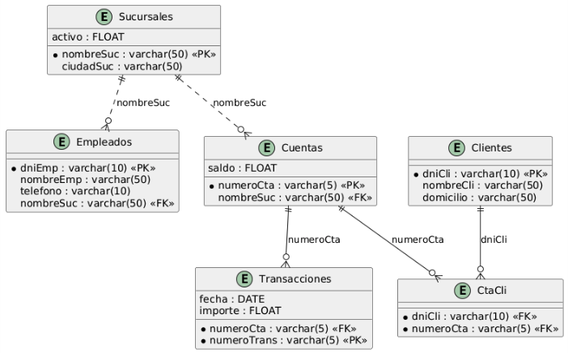

Resumen
Este tutorial está diseñado para introducir y profundizar en el uso del lenguaje SQL mediante el análisis y la práctica con una base de datos bancaria. A lo largo del tutorial se exploran conceptos fundamentales y avanzados del manejo de bases de datos relacionales, utilizando ejemplos prácticos y casos reales.
-
Aprender a realizar consultas SQL básicas y avanzadas.
-
Comprender el uso de operadores SQL y su aplicación en diferentes escenarios.
-
Explorar las distintas formas de combinar tablas, como
INNER JOIN,LEFT JOINyCROSS JOIN. -
Practicar con subconsultas, vistas, procedimientos almacenados y triggers para resolver problemas complejos.
-
Aplicar técnicas de manipulación de datos (DML) como inserciones, actualizaciones y eliminaciones.
1. Esquema de la base de datos
Este esquema muestra la estructura de la base de datos Banco, que incluye las tablas Clientes, Cuentas, Empleados, CtaCli y Sucursales. Cada tabla tiene sus respectivos campos y relaciones. El diagrama ha sido obtenido mediante sintaxis PlantUML para diagramas relacionales.

2. Consultas SQL sobre la base de datos Banco
2.1. Consultas básicas
2.1.1. Visualización de datos de clientes
SELECT *
FROM Clientes;Esta consulta muestra todos los campos de la tabla Clientes, permitiendo ver la estructura completa de los datos almacenados.
Esta es una consulta SQL básica que recupera todos los datos de la tabla Clientes. Vamos a desglosar sus componentes:
-
SELECT *: Esta cláusula indica que queremos seleccionar todas las columnas disponibles en la tabla. El asterisco (\*) es un comodín que representa "todas las columnas". -
FROM Clientes: Especifica la tabla de origen de donde se obtendrán los datos, en este caso la tabla llamadaClientes`.
Consideraciones importantes:
-
Esta consulta devolverá todas las filas y columnas de la tabla, lo cual puede no ser eficiente si la tabla contiene muchos registros.
-
En un entorno de producción, es una mejor práctica especificar solo las columnas necesarias en lugar de usar
*.
2.1.2. Consulta selectiva de campos
SELECT nombrecli, domicilio
FROM Clientes;Esta consulta devuelve el nombre y domicilio de todos los clientes. Se seleccionan específicamente los campos nombre y domicilio de los clientes, útil cuando solo necesitamos información específica.
La cláusula SELECT especifica las columnas que queremos obtener:
-
nombrecli: Contiene el nombre del cliente -
domicilio: Contiene la dirección del cliente
La cláusula FROM indica la tabla de origen:
-
Clientes: Es la tabla que contiene los datos de los clientes
Esta consulta devolverá una lista con dos columnas: el nombre y el domicilio de todos los clientes almacenados en la tabla. Al no incluir una cláusula WHERE, se mostrarán todos los registros sin ningún filtro.
Es una consulta sencilla pero común para obtener un listado básico de información de contacto de los clientes.
2.1.3. Eliminación de duplicados
SELECT DISTINCT(nombresuc)
FROM Empleados;Esta consulta elimina duplicados en la columna nombresuc de la tabla Empleados, mostrando solo valores únicos. Es útil para obtener una lista de sucursales sin repeticiones. La consulta devuelve la lista de sucursales en las que hay empleados trabajando (eliminando los duplicados).
2.2. Consultas con filtros
2.2.1. Empleados de una sucursal
SELECT nombreemp, dniemp
FROM Empleados
WHERE nombresuc = 'Downtown';Esta consulta filtra los empleados que trabajan en una sucursal específica, mostrando su nombre y DNI. En concreto, la consulta devuelve el nombre y DNI de los empleados que trabajan en la sucursal ‘Downtown’.
-
Campos seleccionados:
-
nombreemp(nombre del empleado) -
dniemp(DNI o documento de identidad del empleado)
-
-
Condición de filtrado: La cláusula
WHEREfiltra los empleados que trabajan específicamente en la sucursal ‘Downtown’
Esta consulta es útil cuando necesitas obtener un listado de empleados con sus identificaciones que trabajan en una ubicación específica. El resultado mostrará dos columnas: el nombre y el DNI de todos los empleados asignados a la sucursal Downtown.
2.3. Consultas con el operador AND
El operador AND se utiliza para combinar múltiples condiciones en una consulta, devolviendo resultados que cumplan todas las condiciones especificadas.
SELECT numerocta, saldo
FROM Cuentas
WHERE nombresuc = 'Perrydge'
AND saldo > 35000;Demuestra el uso de múltiples condiciones para filtrar resultados, en este caso por sucursal y saldo. La consulta devuelve el número de cuenta y saldo de las cuentas en la sucursal ‘Perrydge’ con un saldo superior a 35,000.
Esta consulta SQL realiza una búsqueda específica en la tabla Cuentas con los siguientes criterios:
-
Selecciona dos columnas específicas:
numerocta(número de cuenta) ysaldo -
Filtra los registros para mostrar solo las cuentas de la sucursal ‘Perrydge’
-
Muestra únicamente las cuentas cuyo saldo sea superior a
35,000
La consulta utiliza:
-
La cláusula
SELECTpara especificar las columnas deseadas -
La cláusula
FROMpara indicar la tabla fuente -
La cláusula
WHEREcon dos condiciones combinadas conAND:-
nombresuc = 'Perrydge' -
saldo > 35000
-
2.3.1. Consultas con el operador OR
El operador OR se utiliza para combinar múltiples condiciones en una consulta, devolviendo resultados que cumplan al menos una de las condiciones especificadas.
SELECT *
FROM Empleados
WHERE nombresuc = 'Downtown'
OR nombresuc = 'Perrydge';Esta consulta muestra cómo usar el operador OR para filtrar resultados basados en múltiples condiciones. La consulta devuelve todos los empleados que trabajan en las sucursales ‘Downtown’ o ‘Perrydge’.
2.3.2. Uso del operador IN
SELECT *
FROM Empleados
WHERE nombresuc IN ('Downtown', 'Perrydge');Muestra el uso del operador IN como alternativa a múltiples condiciones OR. La consulta devuelve todos los empleados que trabajan en las sucursales ‘Downtown’ o ‘Perrydge’.
Esta consulta SQL realiza una operación de selección básica en la tabla Empleados. Vamos a desglosarla:
-
SELECT *: Recupera todas las columnas disponibles en la tabla -
FROM Empleados: Indica que estamos consultando la tabla llamada “Empleados” -
WHERE nombresuc IN ('Downtown', 'Perrydge'): Filtra los resultados para mostrar solo los empleados que trabajan en las sucursales ‘Downtown’ o ‘Perrydge’
El operador IN es una forma concisa de escribir múltiples condiciones OR.
2.3.3. Uso del operador BETWEEN
Si estamos interesados en un rango de valores y sólo disponemos del operador AND, tendríamos la siguiente consulta para obtener las cuentas con saldos entre 20,000 y 40,000:
SELECT *
FROM Cuentas
WHERE saldo >= 20000
AND saldo <= 40000;El problema de esta consulta es que se vuelve pesado el tener que escribir el operador de comparación dos veces. SQL ofrece una forma más compacta y natural para este tipo de situaciones de búsqueda en un rango de valores. Se trata del operador BETWEEN, que permite especificar un rango de valores de forma más sencilla. La consulta anterior podría reescribirse de la siguiente manera usando BETWEEN:
SELECT *
FROM Cuentas
WHERE saldo BETWEEN 20000 AND 40000;Demuestra el uso de BETWEEN para rangos de valores, simplificando la sintaxis de comparación. La consulta devuelve todas las cuentas con saldos entre 20,000 y 40,000.
Esta consulta SQL realiza una búsqueda filtrada en la tabla Cuentas utilizando la cláusula BETWEEN. Vamos a desglosarla:
-
SELECT *: Selecciona todas las columnas disponibles en la tabla -
FROM Cuentas: Indica que estamos consultando la tabla llamada “Cuentas” -
WHERE saldo BETWEEN 20000 AND 40000: Filtra los registros para mostrar solo aquellas cuentas cuyo saldo está entre20,000y40,000(inclusive)
Esta consulta es útil para obtener un listado de cuentas con saldos dentro de un rango específico. El operador BETWEEN es inclusivo, lo que significa que incluirá registros donde el saldo sea exactamente 20,000 o 40,000, así como todos los valores intermedios.
Las consultas con BETWEEN son más concisas y legibles que las alternativas con múltiples operadores de comparación.
2.4. Consultas con patrones
2.4.1. Búsqueda con LIKE
SELECT *
FROM Clientes
WHERE domicilio LIKE 'Fragata%';Ilustra el uso del operador LIKE para búsquedas de patrones en texto. La consulta devuelve todos los clientes cuyas direcciones comienzan con la palabra ‘Fragata’.
Esta consulta SQL realiza una búsqueda de registros en la tabla Clientes utilizando el operador LIKE para filtrar direcciones.
Analicemos cada parte:
-
SELECT *: Selecciona todas las columnas de la tabla -
FROM Clientes: Indica que estamos consultando la tabla “Clientes” -
WHERE domicilio LIKE 'Fragata%': Filtra los registros donde el campo domicilio comience con la palabra “Fragata”
El símbolo % es un comodín que representa cualquier secuencia de caracteres. Al colocarlo después de "Fragata", la consulta devolverá todos los clientes cuya dirección empiece con "Fragata", sin importar qué caracteres vengan después.
Por ejemplo, esta consulta encontraría direcciones como:
-
Fragata Sarmiento 123
-
Fragata Libertad 456
-
Fragata del Sur 789
Es una consulta útil cuando necesitamos encontrar registros que comparten un prefijo común en un campo de texto.
Otra forma de buscar patrones es utilizando % al principio y al final del patrón. Por ejemplo, para obtener todas las direcciones que contienen la palabra "Azul", escribiríamos LIKE '%Azul%'.
-- Mostrar las filas de los clientes que su domicilio contenga Azul
SELECT *
FROM Clientes
WHERE domicilio LIKE '%Azul%'Además del comodín %, también podemos usar el comodín _ para representar un solo carácter. Por ejemplo, LIKE 'Fragata _' coincidiría con "Fragata A", "Fragata B", pero no con "Fragata AB".
2.5. Consultas con ordenación
2.5.1. Ordenación con varios criterios
SELECT *
FROM Cuentas
ORDER BY nombresuc, saldo DESC;Demuestra cómo ordenar resultados por múltiples campos con diferentes criterios. La consulta devuelve todas las cuentas ordenadas primero por sucursal y luego por saldo de mayor a menor.*
Esta es una consulta SQL básica que recupera datos de una tabla llamada Cuentas. Veamos cada parte:
-
SELECT *- Selecciona todas las columnas disponibles en la tabla -
FROM Cuentas- Indica que los datos se extraerán de la tabla “Cuentas” -
ORDER BY nombresuc, saldo DESC- Ordena los resultados de dos formas:-
Primero por la columna
nombresuc(nombre de sucursal) en orden ascendente por defecto -
Luego por la columna saldo en orden descendente (
DESC)
-
El resultado mostrará todas las cuentas ordenadas por sucursal, y dentro de cada sucursal, las cuentas se ordenarán de mayor a menor saldo. Este tipo de consulta es útil para analizar la distribución de saldos por sucursal bancaria.
2.6. LIMIT y OFFSET
El operador LIMIT se utiliza para restringir el número de filas devueltas por una consulta. Esto es útil cuando solo queremos ver un subconjunto de los resultados. Si se combina con la cláusula ORDER BY podemos obtener los primeros o últimos registros de un conjunto ordenado. Esto es muy útil en consultas de TOP N, donde queremos ver solo los primeros N registros de un conjunto de resultados.
La siguiente consulta muestra las 3 sucursales con mayor activo.
SELECT nombresuc, activo
FROM Sucursales
ORDER BY activo DESC
LIMIT 3;Esta consulta SQL selecciona las tres sucursales con el mayor activo. Vamos a desglosar cada parte:
* SELECT nombresuc, activo: Selecciona las columnas nombresuc (nombre de la sucursal) y activo (cantidad del activo)
* FROM Sucursales: Indica que estamos consultando la tabla Sucursales
* ORDER BY activo DESC: Ordena los resultados por la columna activo en orden descendente (DESC), lo que significa que las sucursales con mayor activo aparecerán primero
* LIMIT 3: Restringe el resultado a las tres primeras filas del conjunto ordenado
Esta consulta es útil para obtener un resumen rápido de las sucursales más importantes en términos de activos. El resultado mostrará solo las tres sucursales con el mayor activo, lo que facilita la identificación de las sucursales más relevantes.
Por otro lado, el operador OFFSET se utiliza para omitir un número específico de filas antes de aplicar el límite. Esto es útil para paginar resultados, permitiendo saltar un número específico de filas antes de aplicar el límite. Así, es muy habitual usar LIMIT y OFFSET juntos para implementar la paginación en aplicaciones web o informes.
La siguiente consulta muestra las tres sucursales con mayor activo, pero omite las dos primeras:
SELECT nombresuc, activo
FROM Sucursales
ORDER BY activo DESC
LIMIT 3 OFFSET 2;Vamos a desglosar cada parte:
-
SELECT nombresuc, activo: Selecciona las columnasnombresuc(nombre de la sucursal) yactivo(cantidad del activo) -
FROM Sucursales: Indica que estamos consultando la tablaSucursales -
ORDER BY activo DESC: Ordena los resultados por la columnaactivoen orden descendente (DESC), lo que significa que las sucursales con mayor activo aparecerán primero -
LIMIT 3 OFFSET 2: Restringe el resultado a las tres primeras filas del conjunto ordenado, pero omite las dos primeras filas. Esto significa que se mostrarán las filas 3, 4 y 5 del conjunto ordenado
2.7. Combinación de tablas
2.7.1. Combinación con producto cartesiano
El producto cartesiano combina todas las filas de dos tablas, generando un conjunto de resultados que es el producto de ambas tablas.
SELECT Cuentas.numerocta, saldo
FROM Clientes,
CtaCli,
Cuentas
WHERE Clientes.dniCli = CtaCli.dniCli
AND CtaCli.numeroCta = Cuentas.numeroCta
AND nombrecli = 'Johnson';Esta consulta muestra cómo combinar múltiples tablas utilizando el producto cartesiano. La consulta selecciona el número de cuenta y saldo de las cuentas del cliente con nombre ‘Johnson’.
La consulta conecta tres tablas diferentes:
-
Clientes: Contiene la información básica de los clientes -
CtaCli: Tabla intermedia que relaciona clientes con cuentas -
Cuentas: Contiene los detalles de las cuentas bancarias
Los JOIN implícitos se realizan en la cláusula WHERE:
-
Clientes.dniCli = CtaCli.dniCli: Relaciona la tablaClientesconCtaClia través del campodniCli -
CtaCli.numeroCta = Cuentas.numeroCta: Relaciona la tablaCtaCliconCuentasa través del camponumeroCta
El filtro WHERE especifica que solo se buscan las cuentas del cliente con nombre ‘Johnson’.
A la hora de combinar tablas, puede ayudar a identificar las tablas que participan en la consulta siguiendo estos pasos:
-
Identificar las tablas en las que están las columnas que se van a mostrar
-
Identificar las tablas que contienen las columnas que se van a utilizar para imponer las condiciones de filtrado del problema
-
Identificar las tablas de relación que conectan las tablas anteriores de acuerdo con la semántica de la consulta y de las relaciones de la base de datos
Es importante destacar que el producto cartesiano puede generar un gran número de resultados si las tablas son grandes, por lo que se recomienda usar JOIN explícitos para evitar este problema.
Otra consulta similar, sería la que obtiene la ciudad de la sucursal en la que trabaja un empleado con un determinado nombre:
SELECT ciudadsuc
FROM Sucursales,
Empleados
WHERE Sucursales.nombreSuc = Empleados.nombreSuc
AND Empleados.nombreEmp = 'Smith';Esta consulta devuelve la ciudad de la sucursal en la que trabaja el empleado ‘Smith’. Se conectan las tablas Sucursales y Empleados a través del campo nombreSuc.
2.7.2. Renombrado de tablas
Al escribir una consulta que involucra múltiples tablas, es común usar alias para hacer la consulta más legible. Esto es especialmente útil cuando las tablas tienen nombres largos o cuando se utilizan varias veces en la misma consulta. Para ello, basta con especificar un alias después del nombre de la tabla en la cláusula FROM. Desde ese momento, la tabla ya debe ser referenciada por su alias y no por su nombre original. No obstante, hay que tener en cuenta que a efectos del esquema de la base de datos, la tabla no ha cambiado su nombre, por lo que el alias solo es válido dentro de la consulta. Además, esto no crea una nueva tabla en la base de datos. Es sólo una forma de referirse a la tabla original de manera más sencilla. A continuación se muestra la consulta que combina a los clientes con sus cuentas usando alias para las tablas:
SELECT Cu.numerocta, Cu.saldo
FROM Clientes Cl,
CtaCli CC,
Cuentas Cu
WHERE Cl.dniCli = CC.dniCli
AND CC.numeroCta = Cu.numeroCta
AND Cl.nombrecli = 'Johnson';Si la escribimos en forma de INNER JOIN, sería:
SELECT Cu.numerocta, Cu.saldo
FROM Clientes Cl
INNER JOIN CtaCli CC ON Cl.dniCli = CC.dniCli
INNER JOIN Cuentas Cu ON CC.numeroCta = Cu.numeroCta
WHERE Cl.nombrecli = 'Johnson';Ambas consultas combinan las tablas Clientes, CtaCli y Cuentas para obtener el número de cuenta y saldo del cliente con nombre ‘Johnson’. La diferencia es que la segunda consulta utiliza INNER JOIN para hacer las uniones explícitamente, lo que puede ser más claro y fácil de entender.
2.7.3. Combinación con CROSS JOIN
Una forma más específica de realizar un producto cartesiano es mediante el uso de CROSS JOIN. Este operador siguen combinando todas las filas de dos tablas sin ninguna condición de unión, pero hace más explícita la intención de realizar un producto cartesiano.
La consulta anterior podría reescribirse utilizando CROSS JOIN de la siguiente manera:
SELECT ciudadsuc
FROM Sucursales
CROSS JOIN Empleados
WHERE Sucursales.nombreSuc = Empleados.nombreSuc
AND Empleados.nombreEmp = 'Smith';Otro ejemplo de CROSS JOIN sería el siguiente:
SELECT *
FROM Sucursales
CROSS JOIN Cuentas
WHERE Sucursales.nombreSuc = Cuentas.nombreSuc
AND ciudadsuc = 'Horseneck';Esta consulta muestra cómo realizar un producto cartesiano utilizando CROSS JOIN. La consulta selecciona todas las columnas de las tablas Sucursales y Cuentas para las sucursales en ‘Horseneck’.
2.7.4. Combinación con INNER JOIN
SELECT Cuentas.numerocta, saldo
FROM Clientes
INNER JOIN CtaCli ON Clientes.dniCli = CtaCli.dniCli
INNER JOIN Cuentas ON CtaCli.numeroCta = Cuentas.numeroCta
WHERE nombrecli = 'Johnson';Esta consulta ilustra el uso de INNER JOIN para relacionar múltiples tablas y obtener información relacionada. La consulta selecciona el número de cuenta y saldo de las cuentas del cliente con nombre ‘Johnson’.
-
La consulta selecciona dos campos específicos:
numeroctaysaldode las cuentas -
Como la columna
numeroCtaaparece en dos tablas, se especifica el nombre de la tabla para evitar ambigüedades -
Utiliza una secuencia de
INNER JOINpara relacionar tres tablas diferentes:-
Clientes: Contiene la información básica de los clientes -
CtaCli: Tabla intermedia que relaciona clientes con cuentas -
Cuentas: Contiene los detalles de las cuentas bancarias
-
Relaciones entre Tablas
-
El primer join conecta
ClientesconCtaCliusando el campodniCli -
El primer join conecta
CtaCliconCuentasusando el camponumeroCta
El filtro WHERE especifica que solo se buscan las cuentas del cliente con nombre ‘Johnson’
Para obtener en qué sucursal trabaja un empleado con un determinado nombre, se podría usar una consulta similar:
SELECT ciudadsuc
FROM Sucursales
INNER JOIN Empleados ON Sucursales.nombreSuc = Empleados.nombreSuc
WHERE Empleados.nombreEmp = 'Smith';2.8. Consultas con operaciones y alias
2.8.1. Conversión de saldo a dólares
SELECT Cuentas.*, saldo * 1.08 AS saldoEnDolares
FROM Cuentas;Muestra cómo realizar operaciones matemáticas en las consultas y el uso de alias para renombrar columnas. La consulta calcula el saldo de las cuentas en dólares asumiendo una tasa de cambio de 1.08.
Esta consulta SQL realiza las siguientes operaciones:
-
Selecciona todas las columnas de la tabla
Cuentasusando el operador* -
Crea una columna calculada llamada
saldoEnDolaresque:-
Toma el valor de la columna
saldo -
Lo multiplica por
1.08(la tasa de cambio)
-
La consulta es útil para ver los saldos de las cuentas tanto en la moneda original como convertidos a dólares, asumiendo una tasa de cambio de 1.08.
Observaciones:
-
El resultado incluirá todas las columnas originales de la tabla
Cuentas -
Más una columna adicional con el cálculo del saldo en dólares
-
La columna calculada solo existe en el resultado de la consulta, no se almacena en la tabla
2.8.2. Operaciones en el WHERE
Es posible realizar operaciones matemáticas en la cláusula WHERE para filtrar resultados basados en cálculos específicos.
SELECT numerocta, saldo
FROM Cuentas
WHERE nombresuc = 'Perrydge'
AND saldo > 35000/1.08;Esta consulta muestra cómo realizar operaciones matemáticas en la cláusula WHERE para filtrar resultados. La consulta devuelve el número de cuenta y saldo de las cuentas en la sucursal ‘Perrydge’ con un saldo superior a 35,000 dólares (equivalente en euros).
-
SELECT numerocta, saldo: La instrucciónSELECTindica que queremos recuperar datos de las columnas numerocta y saldo de la tabla. Esto significa que el resultado incluirá únicamente estas dos columnas. -
FROM Cuentas: La cláusulaFROMespecifica que los datos se obtendrán de la tablaCuentas. -
WHERE nombresuc = 'Perrydge': La cláusulaWHEREse utiliza para filtrar los resultados. En este caso, se seleccionan únicamente las filas donde la columna nombresuc sea igual a 'Perrydge'. Esto limita los resultados a las cuentas asociadas con esta sucursal específica. -
AND saldo > 35000/1.08: Este filtro adicional en la cláusula WHERE asegura que solo se incluyan las cuentas cuyo saldo sea mayor que el resultado de la operación 35000/1.08. La división 35000/1.08 convierte un valor en dólares.
Si en la misma consulta también quisiéramos mostrar además el saldo en dólares, podríamos hacerlo de la siguiente manera:
SELECT numerocta, saldo, saldo * 1.08 AS saldoEnDolares
FROM Cuentas
WHERE nombresuc = 'Perrydge'
AND saldo > 35000/1.08;2.9. Consultas con operadores de conjunto
2.9.1. Unión de nombres
SELECT nombreEmp
FROM Empleados
UNION
SELECT nombreCli
FROM Clientes;Demuestra el uso del operador UNION para combinar resultados de diferentes consultas. La consulta devuelve una lista única de nombres de empleados y clientes.
Esta consulta SQL combina los resultados de dos instrucciones SELECT diferentes utilizando el operador UNION. Veamos en detalle lo que hace:
-
La primera parte
SELECT nombreEmp FROM empleadosobtiene los nombres de todos los empleados de la tabla empleados. -
La segunda parte
SELECT nombreCli FROM clientesobtiene los nombres de todos los clientes de la tabla clientes. -
El operador
UNIONcombina ambos resultados en una única lista, eliminando automáticamente cualquier duplicado que pudiera existir.
Es importante notar que:
-
Las columnas seleccionadas en ambas consultas deben tener tipos de datos compatibles
-
El número de columnas debe ser igual en ambas consultas
-
Los nombres que aparecerán en el resultado final serán únicos (sin duplicados)
-
La columna resultante tomará el nombre de la primera consulta (
nombreEmp)
2.10. Consultas con diferentes tipos de JOIN
2.10.1. LEFT JOIN con filtrado
El operador LEFT JOIN se utiliza para combinar dos tablas, devolviendo todos los registros de la tabla de la izquierda y los registros coincidentes de la tabla de la derecha. Si no hay coincidencias, se devuelven valores nulos para las columnas de la tabla de la derecha.
SELECT *
FROM Sucursales
LEFT JOIN Cuentas ON Sucursales.nombreSuc = Cuentas.nombreSuc
WHERE ciudadsuc = 'Horseneck';Muestra el uso de LEFT JOIN para incluir todas las sucursales aunque no tengan cuentas asociadas.
Esta consulta SQL realiza las siguientes operaciones:
-
Selección de Datos: Utiliza
SELECT *para obtener todas las columnas disponibles de las tablas involucradas. -
Tabla Principal: La consulta comienza desde la tabla
Sucursales, que contiene datos sobre las sucursales bancarias. -
Unión Externa: Emplea un
LEFT JOINcon la tablaCuentas, lo que significa que:-
Se mostrarán todas las sucursales de Horseneck
-
Incluso si una sucursal no tiene cuentas asociadas, aparecerá en los resultados
-
La condición de unión se basa en el campo
nombreSucque existe en ambas tablas
-
-
Filtrado: La cláusula
WHERE ciudadsuc = 'Horseneck'filtra los resultados para mostrar solo las sucursales ubicadas en la ciudad de Horseneck.
Esta consulta es útil para obtener un panorama completo de todas las sucursales en Horseneck junto con sus cuentas asociadas, incluyendo aquellas sucursales que podrían no tener cuentas registradas.
2.11. Subconsultas
2.11.1. Subconsulta en la cláusula WHERE
Las subconsultas en la cláusula WHERE se utilizan para filtrar resultados basados en los resultados de otra consulta interna. En este caso, la subconsulta se ejecuta primero y luego se utiliza para filtrar los resultados de la consulta principal.
SELECT nombreemp
FROM Empleados
WHERE nombresuc IN (
SELECT nombresuc
FROM Empleados
WHERE nombreemp = 'Smith'
);Ejemplifica el uso de subconsultas para filtrar resultados basados en otra consulta. La consulta devuelve los empleados que trabajan en las mismas sucursales que el empleado ‘Smith’.
Esta consulta SQL está diseñada para encontrar empleados que trabajan en las mismas sucursales que el empleado ‘Smith’. Veamos cómo funciona paso a paso:
La subconsulta interna:
SELECT nombresuc
FROM Empleados
WHERE nombreemp = 'Smith';Esta parte obtiene el nombre de la(s) sucursal(es) donde trabaja Smith.
La consulta externa:
SELECT nombreemp
FROM Empleados
WHERE nombresuc IN (...)Esta parte busca todos los empleados que trabajan en las mismas sucursales que encontró la subconsulta.
Es importante notar que:
-
Si Smith trabaja en múltiples sucursales, la consulta devolverá empleados de todas esas sucursales
-
Si no existe ningún empleado llamado ‘Smith’, la consulta no devolverá resultados
-
El resultado incluirá también a Smith en la lista de empleados
-
Se debe usar el operador
INpara la comparación, ya que la subconsulta puede devolver más de un valor
|
Las consultas con subconsultas pueden ser más lentas que las consultas con |
Una forma de optimizar esta consulta podría ser usando un JOIN, especialmente si la tabla de Empleados es grande. Anteriormente se mostró el uso del renombrado de tablas para hacer las consultas más legibles. Sin embargo, el renombrado de tablas puede tener un uso más interesante cuando tenemos que usar la misma tabla varias veces en la misma consulta, pero no para imponer varias condiciones de filtrado (p.e. que el saldo sea mayor que 35,000 y que la sucursal sea Perrydge), sino para que el resultado del filtrado aplicado a una tabla sea la entrada para volver a filtrar la misma tabla, pero con otra condición. En esas situaciones es recomendable usar el renombrado de tablas. En este caso, la consulta anterior podría reescribirse de la siguiente manera:
SELECT DISTINCT E1.nombreemp
FROM Empleados E1
INNER JOIN Empleados E2 ON E1.nombresuc = E2.nombresuc
WHERE E2.nombreemp = 'Smith';Esta consulta realiza un join de la tabla Empleados consigo misma (autojoin) para encontrar todos los empleados que trabajan en la misma sucursal que el empleado ‘Smith’. El autojoin se logra utilizando dos alias diferentes (E1 y E2) para referirse a la misma tabla.
2.11.2. Subconsulta en la cláusula FROM
Las subconsultas en la cláusula FROM permiten usar el resultado de una consulta como si fuera una tabla temporal. Esto es útil para realizar operaciones adicionales sobre los resultados de la subconsulta. Para ello, basta con colocar la expresión de la consulta en el FROM (la encerraremos entre paréntesis) y darle un alias a la tabla resultante. A continuación se muestra un ejemplo de una consulta que utiliza una subconsulta en la cláusula FROM. El ejemplo será el mismo que el anterior. La subconsulta interna se encargará de obtener el nombre de la sucursal donde trabaja el empleado Smith y la consulta externa se encargará de obtener los empleados que trabajan en esa sucursal. La consulta sería la siguiente:
SELECT nombreemp
FROM (SELECT nombresuc
FROM Empleados
WHERE nombreemp = 'Smith') AS SucursalDeSmith
INNER JOIN Empleados ON Empleados.nombresuc = SucursalDeSmith.nombresuc;Esta consulta SQL utiliza una subconsulta en la cláusula FROM para encontrar todos los empleados que trabajan en la misma sucursal que el empleado ‘Smith’. Vamos a desglosar cómo funciona:
-
La subconsulta interna:
SELECT nombresuc
FROM Empleados
WHERE nombreemp = 'Smith';Esta parte obtiene el nombre de la sucursal donde trabaja el empleado Smith. El resultado de esta subconsulta se trata como una tabla temporal llamada SucursalDeSmith.
-
La consulta externa:
SELECT nombreemp
FROM (SELECT nombresuc
FROM Empleados
WHERE nombreemp = 'Smith') AS SucursalDeSmith
INNER JOIN Empleados ON Empleados.nombresuc = SucursalDeSmith.nombresuc;Esta parte busca todos los empleados que trabajan en la misma sucursal que Smith. El join se realiza entre la tabla Empleados y la tabla temporal SucursalDeSmith utilizando el campo nombresuc. Esta operación combina la sucursal de Smith con todos los empleados que trabajan en esa sucursal.
-
La cláusula
INNER JOINse utiliza para combinar los resultados de la subconsulta con la tablaEmpleados, filtrando así los empleados que trabajan en la misma sucursal queSmith. -
El resultado final mostrará los nombres de todos los empleados que trabajan en la misma sucursal que
Smith. -
La consulta devolverá una lista de nombres de empleados y además incluirá a
Smithen la lista de resultados, ya que también trabaja en su propia sucursal.
Si queremos eliminar a Smith de la lista de resultados, podemos añadir una condición adicional en la cláusula WHERE:
SELECT nombreemp
FROM (SELECT nombresuc
FROM Empleados
WHERE nombreemp = 'Smith') AS SucursalDeSmith
INNER JOIN Empleados ON Empleados.nombresuc = SucursalDeSmith.nombresuc
WHERE nombreemp <> 'Smith';Esta consulta es similar a la anterior, pero añade una condición adicional para excluir al empleado Smith de los resultados finales. La cláusula WHERE nombreemp <> 'Smith' asegura que el resultado no incluya a Smith, mostrando solo los demás empleados que trabajan en la misma sucursal.
Esta consulta es útil para obtener una lista de empleados que trabajan en la misma sucursal que Smith, excluyendo a Smith de la lista.
2.11.3. Subconsulta en la cláusula SELECT
Las subconsultas en la cláusula SELECT permiten calcular valores adicionales basados en los resultados de otra consulta. Esto es útil para realizar cálculos o agregaciones sobre los datos seleccionados. Sin embargo, aún no hemos visto el uso de las agregaciones. Mientras tanto, ilustremos este tipo de subconsultas mostrando para cada cliente cuál es la cuenta con mayor saldo.
SELECT nombrecli, ( SELECT Cu.numerocta
FROM Cuentas Cu
INNER JOIN CtaCli CC ON Cu.numeroCta = CC.numeroCta
WHERE Clientes.dniCli = CC.dniCli
ORDER BY saldo DESC
LIMIT 1)
FROM Clientes;Esta consulta SQL muestra cómo usar una subconsulta en la cláusula SELECT para obtener información adicional sobre los clientes. En este caso, se busca la cuenta con el mayor saldo para cada cliente.
Vamos a desglosar cómo funciona:
-
SELECT nombrecli: Selecciona el nombre del cliente de la tablaClientes. -
La subconsulta interna:
SELECT Cu.numerocta
FROM Cuentas Cu
INNER JOIN CtaCli CC ON Cu.numeroCta = CC.numeroCta
WHERE Clientes.dniCli = CC.dniCli
ORDER BY saldo DESC
LIMIT 1
Esta parte busca el número de cuenta (Cu.numerocta) con el mayor saldo para cada cliente. La subconsulta se une a las tablas Cuentas y CtaCli para obtener la información de la cuenta asociada al cliente.
-
WHERE Clientes.dniCli = CC.dniCli: Relaciona la tablaClientesconCtaClia través del campodniCli, asegurando que se obtenga la cuenta correcta para cada cliente. Importante destacar que la consulta interna está usando la tablaClientesde la consulta externa. Esto es posible porque la subconsulta se ejecuta para cada fila de la consulta externa, permitiendo que el filtroWHEREfuncione correctamente. Es lo que se denomina una consulta correlacionada. -
ORDER BY saldo DESC: Ordena los resultados de la subconsulta por saldo en orden descendente, asegurando que la cuenta con el mayor saldo aparezca primero. -
LIMIT 1: Limita el resultado de la subconsulta a solo una fila, es decir, la cuenta con el mayor saldo. -
FROM Clientes: Indica que estamos consultando la tablaClientescomo la tabla principal. -
El resultado final mostrará el nombre del cliente y el número de cuenta con el mayor saldo para cada cliente.
-
Si un cliente tiene varias cuentas, la subconsulta devolverá solo la cuenta con el mayor saldo.
El problema que presenta la consulta anterior es que para cada cliuente, la consulta anidada del SELECT sólo puede mostrar una columna (el número de cuenta). Podríamos crear nuevas subconsultas y añadirlas de nuevo al SELECT, pero también es posible usar otra técnica, ya que los datos en los que podríamos estar interesados ya están en esa subconsulta. Es el caso de quisiéramos mostrar el saldo de la mejora cuenta y la sucursal a la que pertenece. En este caso no podríamos mostrar las tres columnas, ya que una subconsulta en el SELECT sólo puede devolver una columna. Podemos usar las funciones CONCAT y JSON_OBJECT para esta cuestión
-
CONCATes una función que permite concatenar cadenas de texto. En este caso, se utiliza para combinar el número de cuenta, el saldo y el nombre de la sucursal en una sola cadena. Su sintaxis esCONCAT(cadena1, cadena2, …), dondecadena1,cadena2, etc. son las cadenas que se desean concatenar. Pueden ser columnas de la consulta o cadenas de texto entrecomilladas. -
JSON_OBJECTes una función que crea un objeto JSON a partir de pares clave-valor. En este caso, se utiliza para crear un objeto JSON que contiene el número de cuenta, el saldo y el nombre de la sucursal. Su sintaxis esJSON_OBJECT('clave1', valor1, 'clave2', valor2, …), donde'clave1','clave2', etc. son las claves del objeto JSON yvalor1,valor2, etc. son los valores correspondientes.
Así, si queremos acompañar el número de cuenta con mayor saldo de cada cliente con el saldo y la sucursal a la que pertenece, podríamos usar la siguiente consulta usando CONCAT:
SELECT nombrecli, (SELECT CONCAT(Cu.numerocta, ' - ', Cu.saldo, ' - ', Cu.nombreSuc)
FROM Cuentas Cu
INNER JOIN CtaCli CC ON Cu.numeroCta = CC.numeroCta
WHERE Clientes.dniCli = CC.dniCli
ORDER BY saldo DESC
LIMIT 1) AS datosMejorCuenta
FROM Clientes;Por otro lado, si quisiéramos usar JSON_OBJECT, la consulta sería la siguiente:
SELECT nombrecli, (SELECT JSON_OBJECT('numerocta', Cu.numerocta, 'saldo', Cu.saldo, 'nombreSuc', Cu.nombreSuc)
FROM Cuentas Cu
INNER JOIN CtaCli CC ON Cu.numeroCta = CC.numeroCta
WHERE Clientes.dniCli = CC.dniCli
ORDER BY saldo DESC
LIMIT 1) AS datosMejorCuenta
FROM Clientes;|
Las subconsultas correlacionadas son aquellas que dependen de la consulta externa para su ejecución. Estas subconsultas se ejecutan una vez por cada fila de la consulta externa, lo que puede hacer que sean menos eficientes en comparación con las subconsultas independientes. Sin embargo, son útiles cuando necesitamos filtrar resultados basados en valores de la consulta externa. Su funcionamiento viene a ser parecido a un bucle en tanto que la subconsulta se ejecuta para cada fila de la consulta externa. A nivel de sintaxis, las consultas correlacionadas siguen un patrón concreto y es que la subconsulta debe referirse a la tabla de la consulta externa. |
Otra forma de obtener el mismo resultado sería usar una subconsulta en la cláusula FROM y luego hacer un JOIN con la tabla Cuentas. La dos consultas más internas se encargan de obtener para cada cliente su cuenta con mayor saldo. Para enriquecer ese resultado con nuevas columnas, se hace un JOIN con la tabla Cuentas para obtener el saldo y la sucursal a la que pertenece. La consulta sería la siguiente:
SELECT Cuentas.numeroCta, Cuentas.saldo, Cuentas.nombreSuc, Aux.nombrecli
FROM (SELECT nombrecli, ( SELECT Cu.numerocta
FROM Cuentas Cu
INNER JOIN CtaCli CC ON Cu.numeroCta = CC.numeroCta
WHERE Clientes.dniCli = CC.dniCli
ORDER BY saldo DESC
LIMIT 1) as mejorCuenta
FROM Clientes) Aux,
Cuentas
WHERE Aux.mejorCuenta = Cuentas.numeroCta;2.12. Los operadores EXISTS, ALL y ANY
Los operadores EXISTS, ALL y ANY son utilizados en SQL para realizar comparaciones y filtrados en subconsultas. A continuación, se explican cada uno de ellos:
-
EXISTS: Este operador se utiliza para verificar si una subconsulta devuelve al menos una fila. Si la subconsulta devuelve al menos una fila,EXISTSdevuelve verdadero; de lo contrario, devuelve falso. Se utiliza comúnmente en condicionesWHEREpara filtrar resultados basados en la existencia de registros relacionados. La consulta siguiente devuelve los nombres de sucursales que tienen empleados:
SELECT nombresuc
FROM Sucursales
WHERE EXISTS (SELECT *
FROM Empleados
WHERE Sucursales.nombresuc = Empleados.nombresuc);Esta consulta SQL busca los nombres de sucursales que tienen empleados asociados. La subconsulta interna verifica si existen empleados en la tabla Empleados que coincidan con la sucursal actual. Si hay al menos un empleado en esa sucursal, el nombre de la sucursal se incluirá en el resultado. Obsérvese que se trata de una consulta correlacionada, ya que la subconsulta hace referencia a la tabla Sucursales, que está en la consulta externa.
|
El uso de |
No obstante, esta consulta se podría haber resuelto de una forma más sencilla buscando directamente en la tabla Empleados, ya que cada empleado tiene en esa tabla un registro indicando la tabla en la que trabaja, y sólo serán las sucursales de esa tabla las que tengan empleados trabajando.
SELECT DISTINCT(nombreSuc)
FROM Empleados;Para obtener las sucursales que no tienen empleados trabajando en ellas podríamos usar el operador NOT EXISTS de la siguiente manera:
SELECT nombresuc
FROM Sucursales
WHERE NOT EXISTS (SELECT *
FROM Empleados
WHERE Sucursales.nombresuc = Empleados.nombresuc);Esta consulta SQL busca los nombres de sucursales que no tienen empleados asociados. La subconsulta interna verifica si existen empleados en la tabla Empleados que coincidan con la sucursal actual. Si no hay empleados en esa sucursal, el nombre de la sucursal se incluirá en el resultado. Al igual que la consulta anterior, esta también es una consulta correlacionada, ya que la subconsulta hace referencia a la tabla Sucursales, que está en la consulta externa.
|
El uso de |
Esta consulta también se podría haber escrito usando un LEFT JOIN de Sucursales y Empleados, y filtrando los resultados en los que los empleados fueran NULL. Esos registros corresponden a sucursales sin empleados trabajando.
SELECT Sucursales.nombresuc
FROM Sucursales
LEFT JOIN Empleados ON Sucursales.nombresuc = Empleados.nombresuc
WHERE Empleados.nombresuc IS NULL;Otra opción es usar NOT IN para filtrar los resultados. En este caso, la consulta sería la siguiente:
SELECT nombresuc
FROM Sucursales
WHERE nombresuc NOT IN (SELECT nombresuc
FROM Empleados);Esta consulta SQL busca los nombres de sucursales que no tienen empleados asociados. La subconsulta interna obtiene todos los nombres de sucursales que tienen empleados, y la consulta externa filtra las sucursales que no están en esa lista.
-
ALL: Este operador se utiliza para comparar un valor con todos los valores devueltos por una subconsulta. Si la comparación es verdadera para todos los valores,ALLdevuelve verdadero; de lo contrario, devuelve falso. Se utiliza comúnmente en condicionesWHEREpara filtrar resultados basados en comparaciones con múltiples valores. La consulta siguiente devuelve los clientes que tienen cuentas con una saldo superior al de todas las cuentas deSmith:
SELECT nombrecli, Cuentas.numerocta, saldo
FROM Clientes
INNER JOIN CtaCli ON Clientes.dniCli = CtaCli.dniCli
INNER JOIN Cuentas ON CtaCli.numeroCta = Cuentas.numeroCta
WHERE saldo > ALL (SELECT saldo
FROM Cuentas
INNER JOIN CtaCli ON Cuentas.numeroCta = CtaCli.numeroCta
INNER JOIN Clientes ON CtaCli.dniCli = Clientes.dniCli
WHERE nombreCli = 'Smith');
|
Esta consulta no funciona en SQLite, ya que no permite el uso de |
-
ANY: Este operador se utiliza para comparar un valor con al menos uno de los valores devueltos por una subconsulta. Si la comparación es verdadera para al menos un valor,ANYdevuelve verdadero; de lo contrario, devuelve falso. Se utiliza comúnmente en condicionesWHEREpara filtrar resultados basados en comparaciones con múltiples valores. La consulta siguiente devuelve los clientes que tienen cuentas con un saldo superior al de alguna de las cuentas deSmith:
SELECT nombrecli, Cuentas.numerocta, saldo
FROM Clientes
INNER JOIN CtaCli ON Clientes.dniCli = CtaCli.dniCli
INNER JOIN Cuentas ON CtaCli.numeroCta = Cuentas.numeroCta
WHERE saldo > ANY (SELECT saldo
FROM Cuentas
INNER JOIN CtaCli ON Cuentas.numeroCta = CtaCli.numeroCta
INNER JOIN Clientes ON CtaCli.dniCli = Clientes.dniCli
WHERE nombreCli = 'Smith');|
Esta consulta no funciona en SQLite, ya que no permite el uso de |
2.13. Consultas con funciones de agregación
Las funciones de agregación son funciones que realizan cálculos sobre un conjunto de valores y devuelven un único valor. Estas funciones son útiles para resumir o agrupar datos en consultas SQL. Las funciones de agregación más comunes son:
-
COUNT: Cuenta el número de filas en un conjunto de resultados. -
SUM: Suma los valores de una columna numérica. -
AVG: Calcula el medio de los valores de una columna numérica. -
MIN: Devuelve el valor mínimo de una columna. -
MAX: Devuelve el valor máximo de una columna.
Veamos algunos ejemplos de cómo usar estas funciones de agregación en consultas SQL.
2.13.1. Contar filas
Obtener el número total de empleados en la tabla Empleados:
SELECT COUNT(*) AS numEmpleados
FROM Empleados;Esta consulta SQL cuenta el número total de empleados en la tabla Empleados. La función COUNT(*) cuenta todas las filas de la tabla y devuelve el resultado como numEmpleados. El resultado será un único valor que representa el número total de empleados en la tabla.
-
COUNT(*)cuenta todas las filas de la tabla, incluyendo aquellas con valores nulos -
AS numEmpleadosasigna un alias al resultado, lo que significa que el resultado se mostrará con el nombrenumEmpleadosen lugar deCOUNT(*) -
FROM Empleadosindica que estamos consultando la tablaEmpleados -
El resultado será una única fila con el número total de empleados en la tabla
-
Si la tabla
Empleadosestá vacía, el resultado será0 -
Si la tabla tiene registros, el resultado será un número entero que representa la cantidad de empleados en la tabla
-
Esta consulta es útil para obtener una visión general del número de empleados en la base de datos
Para obtener la cantidad de empleados de la sucursal Downtown podríamos usar la siguiente consulta:
SELECT COUNT(*) AS numEmpleados
FROM Empleados
WHERE nombresuc = 'Downtown';Esta consulta SQL cuenta el número total de empleados en la sucursal Downtown. La función COUNT(*) cuenta todas las filas de la tabla Empleados que cumplen con la condición especificada en la cláusula WHERE. El resultado se devuelve como numEmpleados, que es un alias para el conteo. El resultado será un único valor que representa el número total de empleados en la sucursal Downtown.
-
COUNT(*)cuenta todas las filas de la tabla, incluyendo aquellas con valores nulos -
AS numEmpleadosasigna un alias al resultado, lo que significa que el resultado se mostrará con el nombrenumEmpleadosen lugar deCOUNT(*) -
FROM Empleadosindica que estamos consultando la tablaEmpleados -
WHERE nombresuc = 'Downtown'filtra los resultados para contar solo los empleados que trabajan en la sucursalDowntown -
El resultado será una única fila con el número total de empleados en la sucursal
Downtown
COUNT se puede combinar con DISTINCT para contar los valores diferentes. Por ejemplo, para saber en cuántas sucursales hay empleados trabajando se contarían los valores diferentes de nombreSuc en la tabla Empleados.
SELECT COUNT(DISTINCT nombresuc) AS numSucursales
FROM Empleados;2.13.2. Suma de valores
Obtener el saldo total de las cuentas del cliente 'Johnson'.
SELECT SUM(saldo) AS saldoTotal
FROM Cuentas
INNER JOIN CtaCli ON Cuentas.numeroCta = CtaCli.numeroCta
INNER JOIN Clientes ON CtaCli.dniCli = Clientes.dniCli
WHERE nombrecli = 'Johnson';Esta consulta SQL calcula el saldo total de las cuentas del cliente 'Johnson'. La función SUM(saldo) suma los saldos de todas las cuentas que pertenecen a ese cliente. El resultado se devuelve como saldoTotal, que es un alias para la suma. El resultado será un único valor que representa el saldo total de las cuentas del cliente 'Johnson'.
-
SUM(saldo)suma los valores de la columnasaldode las cuentas -
AS saldoTotalasigna un alias al resultado, lo que significa que el resultado se mostrará con el nombresaldoTotalen lugar deSUM(saldo) -
FROM Cuentasindica que estamos consultando la tablaCuentas -
INNER JOIN CtaCli ON Cuentas.numeroCta = CtaCli.numeroCtaune la tablaCuentascon la tablaCtaCliutilizando el camponumeroCta -
INNER JOIN Clientes ON CtaCli.dniCli = Clientes.dniCliune la tablaCtaClicon la tablaClientesutilizando el campodniCli -
WHERE nombrecli = 'Johnson'filtra los resultados para incluir solo las cuentas del cliente'Johnson' -
El resultado será una única fila con el saldo total de las cuentas del cliente
'Johnson' -
Si el cliente
'Johnson'no tiene cuentas, el resultado seráNULL -
Si el cliente
'Johnson'tiene cuentas, el resultado será un número que representa la suma de los saldos de todas sus cuentas
2.13.3. Media aritmética de valores
Obtener el saldo medio de las cuentas de la sucursal Downtown:
SELECT AVG(saldo) AS saldoMedio
FROM Cuentas
WHERE nombreSuc = 'Downtown';Esta consulta SQL calcula el saldo medio de las cuentas de la sucursal Downtown. La función AVG(saldo) calcula el medio de los saldos de todas las cuentas que pertenecen a esa sucursal. El resultado se devuelve como saldomedio, que es un alias para el medio. El resultado será un único valor que representa el saldo medio de las cuentas de la sucursal Downtown.
-
AVG(saldo)calcula el medio de los valores de la columnasaldode las cuentas -
AS saldoMedioasigna un alias al resultado, lo que significa que el resultado se mostrará con el nombresaldoMedioen lugar deAVG(saldo) -
FROM Cuentasindica que estamos consultando la tablaCuentas -
WHERE nombreSuc = 'Downtown'filtra los resultados para incluir solo las cuentas de la sucursalDowntown -
El resultado será una única fila con el saldo medio de las cuentas de la sucursal
Downtown -
Si la sucursal
Downtownno tiene cuentas, el resultado seráNULL
2.13.4. Máximo y mínimo de valores
Para obtener el mayor saldo de las cuentas de la sucursal Downtown podríamos usar la siguiente consulta:
SELECT MAX(saldo) AS saldoMaximo
FROM Cuentas
WHERE nombreSuc = 'Downtown';Esta consulta SQL calcula el saldo máximo de las cuentas de la sucursal Downtown. La función MAX(saldo) devuelve el valor máximo de los saldos de todas las cuentas que pertenecen a esa sucursal. El resultado se devuelve como saldoMaximo, que es un alias para el máximo. El resultado será un único valor que representa el saldo máximo de las cuentas de la sucursal Downtown.
-
MAX(saldo)devuelve el valor máximo de los valores de la columnasaldode las cuentas -
AS saldoMaximoasigna un alias al resultado, lo que significa que el resultado se mostrará con el nombresaldoMaximoen lugar deMAX(saldo) -
FROM Cuentasindica que estamos consultando la tablaCuentas -
WHERE nombreSuc = 'Downtown'filtra los resultados para incluir solo las cuentas de la sucursalDowntown -
El resultado será una única fila con el saldo máximo de las cuentas de la sucursal
Downtown -
Si la sucursal
Downtownno tiene cuentas, el resultado seráNULL
También podríamos obtener el saldo máximo de las cuentas de un cliente concreto, como Johnson.
SELECT MAX(saldo) AS saldoMaximo
FROM Cuentas
INNER JOIN CtaCli ON Cuentas.numeroCta = CtaCli.numeroCta
INNER JOIN Clientes ON CtaCli.dniCli = Clientes.dniCli
WHERE nombrecli = 'Johnson';2.13.5. Uso en subconsultas
Estos operadores también pueden usarse en subconsultas, tal y como comentamos anteriormente. Por ejemplo, para saber cuales son los clientes que tienen cuentas con un saldo superior al saldo medio de las cuentas de Johnson escribiríamos
SELECT nombrecli, Cuentas.numerocta, saldo
FROM Clientes
INNER JOIN CtaCli ON Clientes.dniCli = CtaCli.dniCli
INNER JOIN Cuentas ON CtaCli.numeroCta = Cuentas.numeroCta
WHERE saldo > (SELECT AVG(saldo)
FROM Cuentas
INNER JOIN CtaCli ON Cuentas.numeroCta = CtaCli.numeroCta
INNER JOIN Clientes ON CtaCli.dniCli = Clientes.dniCli
WHERE nombrecli = 'Johnson');Esta consulta SQL busca los clientes que tienen cuentas con un saldo superior al saldo medio de las cuentas del cliente 'Johnson'. La subconsulta interna calcula el saldo medio de las cuentas de 'Johnson', y la consulta externa filtra los clientes que tienen cuentas con un saldo mayor a ese medio. El resultado incluirá el nombre del cliente, el número de cuenta y el saldo de esas cuentas.
2.14. Agrupación de resultados
La cláusula GROUP BY se utiliza para agrupar filas que tienen valores idénticos en columnas específicas. Por tanto, se crearán tantos grupos como valores diferentes existan en las columnas especificadas, que pueden ser varias. Se debe tener en cuenta que el valor NULL se considera un valor distinto, por lo que se creará un grupo para los valores NULL.
La cláusula GROUP BY se utiliza comúnmente junto con funciones de agregación para realizar cálculos sobre cada grupo. Esto quiere decir que podemos usar funciones como SUM, AVG, COUNT, etc. en combinación con GROUP BY para obtener resultados resumidos por grupo. Así, podremos calcular la suma de saldos por cliente, el activo medio por ciudad, la cantidad de empleados en cada sucursal, y demás.
La cláusula GROUP BY debe aparecer después de la cláusula WHERE y antes de la cláusula ORDER BY.
Veamos algunos ejemplos de cómo usar la cláusula GROUP BY en consultas SQL.
2.14.1. Grupos con sumatoria
Obtener el saldo total de las cuentas agrupadas por sucursal:
SELECT nombresuc, SUM(saldo) AS saldoTotal
FROM Cuentas
GROUP BY nombresuc;Esta consulta SQL calcula el saldo total de las cuentas agrupadas por sucursal. La función SUM(saldo) suma los saldos de todas las cuentas que pertenecen a cada sucursal. El resultado se devuelve como saldoTotal, que es un alias para la suma. El resultado incluirá el nombre de la sucursal y el saldo total de las cuentas en esa sucursal.
-
GROUP BY nombresucagrupa los resultados por el camponombresuc, lo que significa que se crearán grupos para cada sucursal -
SUM(saldo)suma los valores de la columnasaldode las cuentas de cada grupo, es decir, de cada sucursal -
AS saldoTotalasigna un alias al resultado, lo que significa que el resultado se mostrará con el nombresaldoTotalen lugar deSUM(saldo) -
FROM Cuentasindica que estamos consultando la tablaCuentas -
El resultado incluirá el nombre de la sucursal y el saldo total de las cuentas en esa sucursal
-
Si una sucursal no tiene cuentas, no aparecerá en el resultado
-
Si la tabla
Cuentasestá vacía, el resultado será una tabla vacía
Obtener el saldo total de las cuentas de las sucursales de la ciudad Brooklyn
SELECT Sucursales.nombresuc, SUM(saldo) AS saldoTotal
FROM Cuentas
INNER JOIN Sucursales ON Cuentas.nombresuc = Sucursales.nombresuc
WHERE ciudadsuc = 'Brooklyn'
GROUP BY Sucursales.nombresuc;-
WHERE ciudadsuc = 'Brooklyn'filtra los resultados para incluir solo las sucursales de la ciudadBrooklyn -
GROUP BY nombresucagrupa los resultados por el camponombresuc, lo que significa que se crearán grupos para cada sucursal deBrooklyn. ComoGROUP BYse aplica después deWHERE, solo se agruparán las sucursales que cumplen con la condición de la ciudad -
SUM(saldo)suma los valores de la columnasaldode las cuentas de cada grupo, es decir, de cada sucursal deBrooklyn -
AS saldoTotalasigna un alias al resultado, lo que significa que el resultado se mostrará con el nombresaldoTotalen lugar deSUM(saldo) -
FROM Cuentasindica que estamos consultando la tablaCuentas -
INNER JOIN Sucursales ON Cuentas.nombresuc = Sucursales.nombresucune la tablaCuentascon la tablaSucursalesutilizando el camponombresuc -
El resultado incluirá el nombre de la sucursal y el saldo total de las cuentas en esa sucursal
2.14.2. Grupos con conteo de filas
Obtener cuántos empleados trabajan en cada ciudad:
SELECT ciudadsuc, COUNT(*) AS numEmpleados
FROM Empleados
INNER JOIN Sucursales ON Empleados.nombresuc = Sucursales.nombresuc
GROUP BY ciudadsuc;-
GROUP BY ciudadsucagrupa los resultados por el campociudadsuc, lo que significa que se crearán grupos para cada ciudad -
COUNT(*)cuenta todas las filas de la tablaEmpleadosen cada grupo, es decir, en cada ciudad -
AS numEmpleadosasigna un alias al resultado, lo que significa que el resultado se mostrará con el nombrenumEmpleadosen lugar deCOUNT(*) -
FROM Empleadosindica que estamos consultando la tablaEmpleados -
INNER JOIN Sucursales ON Empleados.nombresuc = Sucursales.nombresucune la tablaEmpleadoscon la tablaSucursalesutilizando el camponombresuc -
El resultado incluirá el nombre de la ciudad y el número total de empleados que trabajan en esa ciudad
-
Si una ciudad no tiene empleados, no aparecerá en el resultado
La consulta anterior sólo devuelve la cuenta de empleados para aquellas ciudades en las que hay empleados trabajando. Sin embargo, no muestra datos de aquellas ciudades en las que no hay empleados trabajando. Para ello deberíamos usar un LEFT JOIN en lugar de un INNER JOIN. Esto permitiría mantener aquellas ciudades que no tienen empleados trabajando. No obstante, no se debe hacer un COUNT(*), que cuenta filas. Y como las sucursales que no tienen empleados aparecen con una fila, mostraría 1 en esos casos cuando no es un valor correcto. En este caso, se debería contar el valor de una columna específica teniendo en cuenta que COUNT aplicado a un valor
NULL no cuenta nada. Una buena idea sería contar los valores de los DNI de empleados, que no pueden ser NULL a no ser que estén mostrándose a través de un LEFT JOIN. La consulta siguiente muestra esto:
SELECT ciudadsuc, COUNT(Empleados.dniEmp) AS numEmpleados
FROM Sucursales
LEFT JOIN Empleados ON Sucursales.nombresuc = Empleados.nombresuc
GROUP BY ciudadsuc;|
El uso de |
2.14.3. La función GROUP_CONCAT
La función GROUP_CONCAT se utiliza para concatenar valores de una columna en un grupo en una sola cadena. Esta función es útil cuando queremos mostrar múltiples valores de una columna en una sola fila. La sintaxis básica de GROUP_CONCAT es la siguiente:
GROUP_CONCAT(columna)Donde columna es la columna cuyos valores queremos concatenar. Los valores se mostrarán separados por comas.
|
En MySQL y MariaDB, la función |
Por ejemplo, si queremos mostrar los nombres de los empleados que trabajan en cada sucursal, podríamos usar la función GROUP_CONCAT de la siguiente manera:
SELECT nombresuc, GROUP_CONCAT(nombreemp) AS empleados
FROM Empleados
GROUP BY nombresuc;Esta consulta SQL muestra los nombres de los empleados que trabajan en cada sucursal. La función GROUP_CONCAT(nombreemp) concatena los nombres de los empleados en una sola cadena, separados por comas. El resultado se devuelve como empleados, que es un alias para la concatenación. El resultado incluirá el nombre de la sucursal y una lista de los nombres de los empleados que trabajan en esa sucursal.
2.14.4. Mostrar columnas no agrupadas en consultas con GROUP BY
A veces es necesario mostrar columnas que no están agrupadas en una consulta con GROUP BY. En estos casos, se pueden usar funciones de agregación para resumir los valores de esas columnas. Sin embargo, esto puede llevar a resultados inesperados si no se tiene cuidado. Por ejemplo, si queremos mostrar el nombre de un cliente junto con el saldo total de sus cuentas, podríamos escribir una consulta como esta:
SELECT nombrecli, SUM(saldo) AS saldoTotal
FROM Clientes
INNER JOIN CtaCli ON Clientes.dniCli = CtaCli.dniCli
INNER JOIN Cuentas ON CtaCli.numeroCta = Cuentas.numeroCta
GROUP BY nombrecli;Esta consulta SQL calcula el saldo total de las cuentas agrupadas por cliente. La función SUM(saldo) suma los saldos de todas las cuentas que pertenecen a cada cliente. El resultado se devuelve como saldoTotal, que es un alias para la suma. El resultado incluirá el nombre del cliente y el saldo total de sus cuentas. Sin embargo, si hay dos clientes que se llaman igual y tienen cuentas, el resultado será incorrecto, ya que se sumarán los saldos de las cuentas de ambos clientes. Para evitar esto, se puede usar subocnsultas, de forma que se agrupe por DNICli para garantizar que no haya dos clientes con el mismo nombre y por otro lado la subconsulta presente el nombre asociado al DNI del cliente. Se podrá hacer con subconsultas en el SELECT y en el FROM.
La consulta siguiente muestra el saldo total de las cuentas de cada cliente, asegurando que no haya confusiones por nombres repetidos usando una subconsulta en el SELECT:
SELECT dniCli, SUM(saldo) AS saldoTotal,
(SELECT nombrecli
FROM Clientes
WHERE Clientes.dniCli = CtaCli.dniCli) AS nombrecli
FROM CtaCli
INNER JOIN Cuentas ON CtaCli.numeroCta = Cuentas.numeroCta
GROUP BY dnicli;Esta consulta SQL calcula el saldo total de las cuentas agrupadas por DNI del cliente. Gracias a la incorporación de la subconsulta, se pueden obtener ahora los nombres de los clientes. La función SUM(saldo) suma los saldos de todas las cuentas que pertenecen a cada cliente. El resultado se devuelve como saldoTotal, que es un alias para la suma. El resultado incluirá el DNI del cliente, el saldo total de sus cuentas y el nombre del cliente. Si quisiéramos mostrar más columnas de la tabla Clientes podríamos hacerlo de la misma forma, añadiendo más subconsultas al SELECT, o bien, usando las funciones CONCAT o JSON_OBJECT para mostrar los datos de forma más compacta.
Otra forma de resolver el mismo problema es usando una subconsulta en el FROM. La consulta siguiente muestra el saldo total de las cuentas de cada cliente, asegurando que no haya confusiones por nombres repetidos usando una subconsulta en el FROM:
SELECT CtaCli.dniCli, SUM(saldo) AS saldoTotal, Cl.nombreCli
FROM CtaCli
INNER JOIN Cuentas ON CtaCli.numeroCta = Cuentas.numeroCta
INNER JOIN (SELECT dniCli, nombrecli
FROM Clientes) AS Cl
ON CtaCli.dniCli = Cl.dniCli
GROUP BY CtaCli.dnicli;Esta consulta SQL calcula el saldo total de las cuentas agrupadas por DNI del cliente. La subconsulta en el FROM selecciona el DNI y el nombre del cliente de la tabla Clientes, y luego se une a la tabla CtaCli utilizando el campo dniCli. En la subconsulta del FROM es necesario que devuelva el DNI del cliente para poder hacer el join con la consulta externa, y también debe devolver el nombre del cliente para poder mostrarlo en el resultado de la consulta.
El resultado incluirá el DNI del cliente, el saldo total de sus cuentas y el nombre del cliente. De esta forma se superan las limitaciones que se tenían en el ejemplo anterior, que se resolvía con la subconsulta en el SELECT, y que tenía que echar mano de las funciones CONCAT o JSON_OBJECT para mostrar los datos de forma más compacta. Al incluir la subconsulta en el FROM, la consulta externa podrá tomar los datos de la subconsulta como si fuera una tabla normal, y no será necesario usar funciones de concatenación para mostrar los datos.
En este caso, la subconsulta en el FROM se utiliza para crear una tabla temporal que contiene los datos de la tabla Clientes, y luego se une a la tabla CtaCli utilizando el campo dniCli. Esto permite evitar confusiones por nombres repetidos y obtener el saldo total de las cuentas de cada cliente de manera más clara.
2.15. Condiciones sobre grupos
La cláusula HAVING se utiliza para filtrar los resultados de una consulta después de que se han agrupado. A diferencia de la cláusula WHERE, que filtra filas antes de la agrupación, HAVING se aplica a los grupos resultantes. Esto significa que podemos usar HAVING para aplicar condiciones a las funciones de agregación y filtrar los grupos según esos resultados. La cláusula HAVING se utiliza comúnmente en combinación con GROUP BY para filtrar los resultados agrupados y se usa después del GROUP BY. La sintaxis básica de HAVING es la siguiente:
HAVING condiciónLa consulta siguiente cuenta cuántas cuentas con saldo superior a 10000 hay en cada sucursal, mostrando sólo aquellas sucursales que tengan al menos una cuenta con saldo superior a 10000:
SELECT nombresuc, COUNT(*) AS numCuentas
FROM Cuentas
WHERE saldo > 10000
GROUP BY nombresuc
HAVING numCuentas > 1;Esta consulta SQL cuenta cuántas cuentas con saldo superior a 10000 hay en cada sucursal. La función COUNT(*) cuenta todas las filas de la tabla Cuentas que cumplen con la condición de saldo superior a 10000. El resultado se devuelve como numCuentas, que es un alias para el conteo. La cláusula HAVING numCuentas > 1 filtra los resultados para mostrar solo aquellas sucursales que tienen más de una cuenta con saldo superior a 10000. El resultado incluirá el nombre de la sucursal y el número total de cuentas que cumplen con la condición.
-
FROM Cuentasindica que estamos consultando la tablaCuentas -
WHERE saldo > 10000filtra los resultados para incluir solo las cuentas con saldo superior a10000 -
GROUP BY nombresucagrupa los resultados por el camponombresuc, lo que significa que se crearán grupos para cada sucursal -
HAVING numCuentas > 1filtra los resultados para mostrar solo aquellas sucursales que tienen más de una cuenta con saldo superior a10000 -
COUNT(*)cuenta todas las filas de la tablaCuentasque cumplen con la condición de saldo superior a10000 -
AS numCuentasasigna un alias al resultado, lo que significa que el resultado se mostrará con el nombrenumCuentasen lugar deCOUNT(*)
Otro ejemplo de uso de HAVING sería el siguiente, que muestra los clientes que tienen más de una cuenta con saldo superior a 10000:
SELECT dniCli, COUNT(*) AS numCuentas
FROM CtaCli
INNER JOIN Cuentas ON CtaCli.numeroCta = Cuentas.numeroCta
WHERE saldo > 10000
GROUP BY dniCli
HAVING numCuentas > 1;Esta consulta SQL cuenta cuántas cuentas con saldo superior a 10000 tiene cada cliente. La función COUNT(*) cuenta todas las filas de la tabla CtaCli que cumplen con la condición de saldo superior a 10000. El resultado se devuelve como numCuentas, que es un alias para el conteo. La cláusula HAVING numCuentas > 1 filtra los resultados para mostrar solo aquellos clientes que tienen más de una cuenta con saldo superior a 10000. El resultado incluirá el DNI del cliente y el número total de cuentas que cumplen con la condición.
Sin embargo, la consulta muestra la cantidad de cuentas por DNI. Si quisiéramos mostrar el nombre del cliente, tendríamos que usar una subconsulta en el SELECT o en el FROM, como se ha visto anteriormente. La consulta siguiente muestra el saldo total de las cuentas de cada cliente, asegurando que no haya confusiones por nombres repetidos usando una subconsulta en el SELECT:
SELECT dniCli, COUNT(*) AS numCuentas,
(SELECT nombrecli
FROM Clientes
WHERE Clientes.dniCli = CtaCli.dniCli) AS nombrecli
FROM CtaCli
INNER JOIN Cuentas ON CtaCli.numeroCta = Cuentas.numeroCta
WHERE saldo > 10000
GROUP BY dnicli
HAVING numCuentas > 1;Si optamos por usar una subconsulta en el FROM, la consulta siguiente muestra el saldo total de las cuentas de cada cliente, asegurando que no haya confusiones por nombres repetidos usando una subconsulta en el FROM:
SELECT CtaCli.dniCli, COUNT(*) AS numCuentas, Cl.nombreCli
FROM CtaCli
INNER JOIN Cuentas ON CtaCli.numeroCta = Cuentas.numeroCta
INNER JOIN (SELECT dniCli, nombrecli
FROM Clientes) AS Cl
ON CtaCli.dniCli = Cl.dniCli
WHERE saldo > 10000
GROUP BY CtaCli.dnicli
HAVING numCuentas > 1;También podemos usar HAVING combinado con ORDER BY y LIMIT para obtener los primeros resultados de un grupo. Por ejemplo, si queremos mostrar los 3 clientes que tengan al menos una cuenta con saldo superior a 10000 y ordenados por saldo total de mayor a menor, podríamos usar la siguiente consulta:
SELECT dniCli, SUM(saldo) AS saldoTotal, COUNT(*) AS numCuentas
FROM CtaCli
INNER JOIN Cuentas ON CtaCli.numeroCta = Cuentas.numeroCta
WHERE saldo > 10000
GROUP BY dniCli
HAVING numCuentas > 0
ORDER BY saldoTotal DESC
LIMIT 3;Esta consulta SQL muestra los 3 clientes que tienen al menos una cuenta con saldo superior a 10000, ordenados por saldo total de mayor a menor. La función SUM(saldo) suma los saldos de todas las cuentas que pertenecen a cada cliente. El resultado se devuelve como saldoTotal, que es un alias para la suma. La función COUNT(*) cuenta todas las filas de la tabla CtaCli que cumplen con la condición de saldo superior a 10000. El resultado se devuelve como numCuentas, que es un alias para el conteo. La cláusula HAVING numCuentas > 0 filtra los resultados para mostrar solo aquellos clientes que tienen al menos una cuenta con saldo superior a 10000. La cláusula ORDER BY saldoTotal DESC ordena los resultados por saldo total de mayor a menor, y la cláusula LIMIT 3 limita el resultado a los primeros 3 clientes.
De nuevo, si quisiéramos mostrar además el nombre del cliente, tendríamos que usar una subconsulta en el SELECT o en el FROM, como se ha visto anteriormente. La consulta siguiente muestra el saldo total de las cuentas de cada cliente, asegurando que no haya confusiones por nombres repetidos usando una subconsulta en el FROM:
SELECT CtaCli.dniCli, SUM(saldo) AS saldoTotal, COUNT(*) AS numCuentas, Cl.nombreCli
FROM CtaCli
INNER JOIN Cuentas ON CtaCli.numeroCta = Cuentas.numeroCta
INNER JOIN (SELECT dniCli, nombrecli
FROM Clientes) AS Cl
ON CtaCli.dniCli = Cl.dniCli
WHERE saldo > 10000
GROUP BY CtaCli.dnicli
HAVING numCuentas > 0
ORDER BY saldoTotal DESC
LIMIT 3;Otra consultas que suelen ser habituales para resolver con HAVING son las que tienen que mostrar resultados comparados con la media de los grupos. Por ejemplo, si quisiéramos saber cuáles son los clientes que tienen más cuentas que la media de cuentas por cliente, podríamos usar la siguiente consulta:
SELECT dniCli, COUNT(*) AS numCuentas,
(SELECT nombrecli
FROM Clientes
WHERE Clientes.dniCli = CtaCli.dniCli) AS nombrecli
FROM CtaCli
INNER JOIN Cuentas ON CtaCli.numeroCta = Cuentas.numeroCta
GROUP BY dniCli
HAVING numCuentas > (SELECT AVG(numCuentas)
FROM (SELECT dniCli, COUNT(*) AS numCuentas
FROM CtaCli
INNER JOIN Cuentas ON CtaCli.numeroCta = Cuentas.numeroCta
GROUP BY dniCli) AS subquery);Esta consulta SQL muestra los clientes que tienen más cuentas que la media de cuentas por cliente. La subconsulta interna calcula la media de cuentas por cliente, y la consulta externa filtra los clientes que tienen más cuentas que esa media. El resultado incluirá el DNI del cliente, el número de cuentas y el nombre del cliente. El SELECT de la consulta externa además incluye una subconsulta que obtiene el nombre del cliente a partir de su DNI. Esto es necesario porque la consulta externa agrupa por DNI, y no se puede mostrar el nombre del cliente directamente.
Para mostrar los nombres de los clientes, también se podría haber resuelto usando una subconsulta en el FROM, como se ha visto anteriormente.
2.16. Vistas
Una vista es una tabla virtual basada en el conjunto de resultados de una consulta SQL. Las vistas actúan como tablas virtuales, permitiendo:
-
Simplificar consultas complejas
-
Reutilizar consultas frecuentes
-
Proporcionar seguridad ocultando detalles de las tablas base
-
Presentar datos de forma personalizada para diferentes usuarios
La sintaxis básica para crear una vista es:
CREATE VIEW nombre_vista AS
consulta_select2.16.1. Ejemplos de Vistas Útiles
En una base de datos como la del banco será muy habitual tener que hacer consultas que involucren varias tablas. Para evitar tener que escribir las mismas consultas repetidamente, podemos crear vistas que simplifiquen el acceso a los datos.
Una primera consulta de este tipo podría ser la siguiente, que muestra información de las cuentas y sus propietarios:
CREATE VIEW InfoCuentas AS
SELECT Cu.numerocta, Cu.saldo, Cu.nombresuc,
Cl.nombrecli, Cl.dnicli
FROM Cuentas Cu
INNER JOIN CtaCli CC ON Cu.numeroCta = CC.numeroCta
INNER JOIN Clientes Cl ON CC.dniCli = Cl.dniCli;Esta vista simplifica la consulta de información de cuentas junto con sus propietarios, evitando tener que escribir los JOINS cada vez que necesitemos esta información.
Otra consulta útil podría ser la siguiente, que muestra cada sucursal y la ciudad a la que pertenece, junto con el número de empleados, el número de cuentas y el saldo total de las cuentas de cada sucursal:
CREATE VIEW EstadisticasSucursales AS
SELECT S.nombresuc,
(SELECT ciudadsuc
FROM Sucursales
WHERE nombresuc = S.nombresuc) AS ciudadsuc,
COUNT(DISTINCT E.dniemp) as num_empleados,
COUNT(DISTINCT C.numerocta) as num_cuentas,
SUM(C.saldo) as saldo_total
FROM Sucursales S
LEFT JOIN Empleados E ON S.nombresuc = E.nombresuc
LEFT JOIN Cuentas C ON S.nombresuc = C.nombresuc
GROUP BY S.nombresuc;Esta vista proporciona un resumen estadístico de cada sucursal, incluyendo número de empleados, número de cuentas y saldo total. Se usa un LEFT JOIN para incluir sucursales sin empleados o cuentas. Además, se usa una subconsulta en el SELECT para mostrar la ciudad de la sucursal, que se obtiene de la tabla Sucursales. Al estar agrupando por nombresuc, no se puede mostrar directamente la ciudad de la sucursal, ya que no se está agrupando por ese campo. Por eso, se usa una subconsulta para obtener la ciudad de la sucursal a partir de su nombre.
Otra consulta útil podría ser la siguiente, que muestra los clientes VIP, es decir, aquellos cuyo saldo total supera la media del saldo total por sucursal:
CREATE VIEW ClientesVIP AS
SELECT Cl.dnicli,
(SELECT nombrecli
FROM Clientes
WHERE Clientes.dniCli = Cl.dniCli) AS nombrecli,
COUNT(Cu.numerocta) as num_cuentas,
SUM(Cu.saldo) as saldo_total
FROM Clientes Cl
INNER JOIN CtaCli CC ON Cl.dniCli = CC.dniCli
INNER JOIN Cuentas Cu ON CC.numeroCta = Cu.numeroCta
GROUP BY Cl.dnicli
HAVING SUM(Cu.saldo) > (SELECT AVG(saldo_total)
FROM (SELECT SUM(saldo) as saldo_total
FROM Cuentas
GROUP BY nombresuc) T);Esta vista identifica clientes VIP cuyo saldo total supera la media del saldo total por sucursal.
Las vistas se pueden consultar como si fueran tablas normales. A continuación se muestran algunos ejemplos de consultas que se pueden realizar sobre las vistas creadas:
-- Consultar información de todas las cuentas
SELECT *
FROM InfoCuentas
WHERE saldo > 50000;
-- Obtener estadísticas de sucursales en una ciudad específica
SELECT *
FROM EstadisticasSucursales
WHERE ciudadsuc = 'Brooklyn';
-- Listar clientes VIP ordenados por saldo total
SELECT *
FROM ClientesVIP
ORDER BY saldo_total DESC;|
Las vistas no almacenan datos físicamente, sino que ejecutan su consulta cada vez que se accede a ellas. Por lo tanto, siempre muestran datos actualizados de las tablas base. |
3. Operaciones DML sobre la Base de Datos Banco
3.1. Inserción de Datos (INSERT)
3.1.1. Inserción Simple
-- Insertar un nuevo cliente con nombre y domicilio
-- (el resto de campos se completan automáticamente)
INSERT INTO Clientes
VALUES ('Ana García', 10, 'Calle Mayor 123');
-- Insertar una nueva sucursal
INSERT INTO Sucursales
VALUES ('Central', 'Madrid', 1000000);3.1.2. Inserción Múltiple
-- Insertar varios empleados a la vez, pero sin especificar el telefono
INSERT INTO Empleados (dniEmp, nombreEmp, nombreSuc)
VALUES
('16', 'Juan Pérez', 'Central'),
('17', 'María López', 'Central'),
('18', 'Pedro García', 'Central');
-- Insertar varias cuentas
INSERT INTO Cuentas
VALUES
(10, 50000, 'Central'),
(11, 75000, 'Central'),
(12, 90000, 'Central');3.1.3. Inserción basada en consultas
-- Crear cuentas para todos los empleados de la sucursal Central
INSERT INTO Cuentas
SELECT
dniEmp + 100, -- Número de cuenta creado a partir del dni
50000, -- Saldo inicial
nombreSuc -- Misma sucursal donde trabaja
FROM Empleados
WHERE nombreSuc = 'Central';
-- Vincular las cuentas creadas con los empleados
INSERT INTO CtaCli (dniCli, numeroCta)
SELECT
dniEmp,
dniEmp + 100 -- Usar el mismo número de cuenta creado
FROM Empleados
WHERE nombreSuc = 'Central';3.2. Actualización de Datos (UPDATE)
3.2.1. Actualización Simple
-- Incrementar el saldo de todas las cuentas de la sucursal Central en un 10%
UPDATE Cuentas
SET saldo = saldo * 1.10
WHERE nombreSuc = 'Central';
-- Cambiar el domicilio de un cliente
UPDATE Clientes
SET domicilio = 'Nueva Calle 456'
WHERE dniCli = 10;3.2.2. Actualización con Subconsultas
-- Aumentar el saldo de las cuentas de los clientes que tienen un saldo mayor a 1000
UPDATE Cuentas
SET saldo = saldo * 1.05
WHERE numeroCta IN (
SELECT numeroCta
FROM CtaCli
WHERE dniCli IN (
SELECT dniCli
FROM Clientes
WHERE saldo > 1000
)
);
-- Actualizar el activo de las sucursales según el saldo total de sus cuentas
UPDATE Sucursales
SET activo = (
SELECT COALESCE(SUM(saldo), 0)
FROM Cuentas
WHERE Cuentas.nombreSuc = Sucursales.nombreSuc
);3.3. Eliminación de Datos (DELETE)
3.3.1. Eliminación Simple
-- Eliminar un cliente específico
DELETE FROM Clientes
WHERE dniCli = 10;
-- Eliminar todas las cuentas con saldo cero
DELETE FROM Cuentas
WHERE saldo = 0;3.3.2. Eliminación con Subconsultas
-- Eliminar las cuentas de los clientes que no han realizado movimientos en el último año
DELETE FROM Cuentas
WHERE numeroCta IN (
SELECT numeroCta
FROM CtaCli
WHERE dniCli IN (
SELECT dniCli
FROM Clientes
WHERE ultimoMovimiento < date('now', '-1 year')
)
);
-- Eliminar las relaciones cliente-cuenta para cuentas cerradas
DELETE FROM CtaCli
WHERE numeroCta IN (
SELECT numeroCta
FROM Cuentas
WHERE estado = 'CERRADA'
);3.3.3. Eliminación con JOIN
-- Eliminar todas las cuentas de una sucursal que va a cerrar
DELETE FROM Cuentas
WHERE nombreSuc IN (
SELECT nombreSuc
FROM Sucursales
WHERE estado = 'PENDIENTE_CIERRE'
);|
Antes de ejecutar operaciones de actualización o eliminación masiva:
|
|
Para operaciones que afecten a múltiples tablas relacionadas, considerar:
|
4. Procedimientos almacenados
Los procedimientos almacenados son bloques de código SQL que se almacenan en el servidor de la base de datos. Estos procedimientos pueden ser invocados posteriormente por aplicaciones, otros procedimientos almacenados o triggers, permitiendo encapsular lógica compleja y reutilizable.
4.1. Ventajas de los procedimientos almacenados
-
Rendimiento mejorado: Al estar precompilados y almacenados en el servidor, se ejecutan más rápidamente que consultas SQL enviadas individualmente.
-
Seguridad: Permiten controlar el acceso a los datos mediante permisos a nivel de procedimiento en lugar de a nivel de tabla.
-
Reutilización: El código se escribe una vez y puede ser utilizado por múltiples aplicaciones.
-
Mantenibilidad: Las modificaciones se realizan en un solo lugar, afectando a todas las aplicaciones que lo utilizan.
-
Reducción del tráfico de red: Al enviar una única llamada al procedimiento en lugar de múltiples consultas.
4.2. Estructura básica
CREATE PROCEDURE nombre_procedimiento
[parámetros]
AS
BEGIN
-- Lógica del procedimiento
END;4.3. Parámetros
Los procedimientos pueden aceptar parámetros de entrada y salida. Los parámetros de entrada permiten pasar valores al procedimiento, mientras que los parámetros de salida permiten devolver valores al llamador.
Los parámetros pueden ser de tipo IN, OUT o INOUT:
-
IN: Parámetro de entrada. Se utiliza para pasar valores al procedimiento. -
OUT: Parámetro de salida. Se utiliza para devolver valores al llamador. -
INOUT: Parámetro de entrada y salida. Se utiliza para pasar un valor al procedimiento y devolver un valor modificado.
Además, los parámetros pueden tener un valor predeterminado, lo que permite llamar al procedimiento sin especificar todos los parámetros.
4.4. Declaración de variables
Las variables dentro de un procedimiento se declaran utilizando la palabra clave DECLARE. Estas variables pueden ser utilizadas para almacenar resultados intermedios, contadores, etc. Las variables pueden ser de diferentes tipos, como INT, VARCHAR, FLOAT, etc. Las variables deben ser declaradas al inicio del bloque del procedimiento, antes de cualquier otra instrucción. Las variables pueden ser inicializadas al momento de su declaración o posteriormente en el bloque del procedimiento.
4.5. Control de flujo
Los procedimientos almacenados pueden incluir estructuras de control de flujo, como IF, CASE, WHILE, LOOP, etc. Estas estructuras permiten ejecutar diferentes bloques de código según ciertas condiciones.
Por ejemplo, se puede utilizar una estructura IF para verificar si un saldo es suficiente antes de realizar una transferencia. También se pueden utilizar bucles para iterar sobre conjuntos de resultados o realizar operaciones repetitivas.
4.6. DELIMITER
El delimitador es un carácter o secuencia de caracteres que indica el final de una instrucción SQL. En MySQL, el delimitador predeterminado es ;. Sin embargo, al crear procedimientos almacenados, es necesario cambiar temporalmente el delimitador para evitar que el servidor interprete el ; dentro del procedimiento como el final de la instrucción.
Por lo tanto, se utiliza la instrucción DELIMITER para cambiar el delimitador a otro carácter o secuencia de caracteres (por ejemplo, //) antes de crear el procedimiento y luego se restablece al delimitador original.
4.7. Manejo de errores
Los procedimientos almacenados pueden incluir manejo de errores para tratar situaciones excepcionales. Las principales instrucciones para el manejo de errores son:
-
SIGNAL: Permite lanzar errores personalizados con códigosSQLSTATEy mensajes específicos. -
DECLARE HANDLER: Define manejadores para capturar y procesar errores específicos. -
GET DIAGNOSTICS: Obtiene información detallada sobre el último error ocurrido.
Los tipos de handlers más comunes son:
-
CONTINUE: Ejecuta el manejador y continúa con la siguiente instrucción. -
EXIT: Ejecuta el manejador y sale del bloque actual. -
UNDO: Similar a EXIT pero revierte la transacción actual. -
SQLEXCEPTION: Captura excepciones SQL. -
SQLWARNING: Captura advertencias SQL. -
NOT FOUND: Captura el caso en que no se encuentra un registro. -
SQLSTATE: Captura el estado SQL. -
SQLCODE: Captura el código de error SQL. -
…
A continuación se muestra un ejemplo de cómo manejar errores en un procedimiento almacenado:
DECLARE CONTINUE HANDLER FOR SQLEXCEPTION
BEGIN
-- Código para manejar el error
GET DIAGNOSTICS CONDITION 1
@sqlstate = RETURNED_SQLSTATE,
@errno = MYSQL_ERRNO,
@text = MESSAGE_TEXT;
END;4.7.1. Llamadas a procedimientos almacenados
Para invocar un procedimiento almacenado, se utiliza la instrucción CALL seguida del nombre del procedimiento y los parámetros necesarios. La sintaxis básica es:
CALL nombre_procedimiento(parametro1, parametro2, ...);Los parámetros pueden ser valores literales, variables o expresiones. Si el procedimiento tiene parámetros de salida, se deben declarar variables para recibir los valores devueltos. Las variables de salida deben ser precedidas por el símbolo @ al momento de la llamada.
4.8. Ejemplo de llamada a un procedimiento
CALL ObtenerSaldo('12345', @saldo);
SELECT @saldo;4.9. La importancia del SELECT INTO
El SELECT INTO es una instrucción SQL que permite seleccionar datos de una tabla y almacenarlos en variables. Es especialmente útil en procedimientos almacenados para asignar valores a variables locales. La sintaxis básica es:
SELECT columna1, columna2, ...
INTO variable1, variable2, ...
FROM tabla
WHERE condición;El SELECT INTO puede devolver múltiples filas, pero solo se puede asignar a una variable si se utiliza en un contexto donde se espera una sola fila. Si se espera que la consulta devuelva más de una fila, se debe utilizar un cursor o una estructura de control de flujo para manejar los resultados.
4.10. Ejemplos de procedimientos almacenados
A continuación se presentan algunos ejemplos de procedimientos almacenados que ilustran su uso en una base de datos bancaria.
4.10.1. Ejemplo de procedimiento simple
-- Procedimiento para obtener el saldo de una cuenta
-- Parámetros de entrada: número de cuenta
-- Parámetros de salida: saldo
DELIMITER //
DROP PROCEDURE IF EXISTS ObtenerSaldo //
CREATE PROCEDURE ObtenerSaldo(
IN p_NumeroCta VARCHAR(5),
OUT p_Saldo FLOAT
)
BEGIN
SELECT saldo INTO p_Saldo
FROM Cuentas
WHERE numeroCta = p_NumeroCta;
END //
DELIMITER ;Por ejemplo, para obtener el saldo de una cuenta, se puede llamar al procedimiento ObtenerSaldo de la siguiente manera:
-- Llamada al procedimiento para obtener el saldo de la cuenta '1'
CALL ObtenerSaldo('1', @saldo);
SELECT @saldo;4.10.2. Crear nueva cuenta bancaria
-- Procedimiento para crear una nueva cuenta bancaria
-- Parámetros de entrada: número de cuenta, saldo inicial, nombre de la sucursal
-- Parámetros de salida: ninguno
-- Verifica si la sucursal existe antes de crear la cuenta
DELIMITER //
DROP PROCEDURE IF EXISTS CrearCuenta //
CREATE PROCEDURE CrearCuenta(
IN p_NumeroCta VARCHAR(5),
IN p_Saldo FLOAT,
IN p_NombreSuc VARCHAR(50)
)
BEGIN
DECLARE sucursal_existe INT;
SELECT COUNT(*) INTO sucursal_existe FROM Sucursales WHERE nombreSuc = p_NombreSuc;
IF sucursal_existe > 0 THEN
INSERT INTO Cuentas (numeroCta, saldo, nombreSuc)
VALUES (p_NumeroCta, p_Saldo, p_NombreSuc);
ELSE
SIGNAL SQLSTATE '45000'
SET MESSAGE_TEXT = 'La sucursal especificada no existe';
END IF;
END //
DELIMITER ;Para crear una nueva cuenta bancaria, se puede llamar al procedimiento CrearCuenta de la siguiente manera:
-- Llamada al procedimiento para crear una nueva cuenta
CALL CrearCuenta(100, 1000, 'Central');
SELECT * FROM Cuentas WHERE numeroCta = 100;4.10.3. Ejemplo con control de flujo
-- Procedimiento para actualizar el saldo de una cuenta
-- Parámetros de entrada: número de cuenta, importe a agregar o restar
-- Parámetros de salida: ninguno
-- Verifica si el saldo es suficiente antes de realizar la actualización
-- Si el saldo es insuficiente, lanza un error
DELIMITER //
DROP PROCEDURE IF EXISTS ActualizarSaldo //
CREATE PROCEDURE ActualizarSaldo(
IN p_NumeroCta VARCHAR(5),
IN p_Importe FLOAT
)
BEGIN
DECLARE saldo_actual FLOAT;
-- Obtener el saldo actual
SELECT saldo INTO saldo_actual
FROM Cuentas
WHERE numeroCta = p_NumeroCta;
-- Verificar si el saldo es suficiente
IF saldo_actual + p_Importe < 0 THEN
SIGNAL SQLSTATE '45000'
SET MESSAGE_TEXT = 'Saldo insuficiente';
ELSE
-- Actualizar el saldo
UPDATE Cuentas
SET saldo = saldo + p_Importe
WHERE numeroCta = p_NumeroCta;
END IF;
END //
DELIMITER ;Para actualizar el saldo de una cuenta, se puede llamar al procedimiento ActualizarSaldo de la siguiente manera:
-- Llamada al procedimiento para actualizar el saldo de la cuenta '100'
CALL ActualizarSaldo(100, -200);
SELECT * FROM Cuentas WHERE numeroCta = 100;Ahora probar con un saldo insuficiente:
-- Llamada al procedimiento para actualizar el saldo de la cuenta '100' con un importe negativo
-- que excede el saldo actual
CALL ActualizarSaldo(100, -2000);
SELECT * FROM Cuentas WHERE numeroCta = 100;4.10.4. Ejemplo con manejo de errores
-- Procedimiento para realizar una transferencia entre cuentas
-- Parámetros de entrada: cuenta de origen, cuenta de destino, importe a transferir
-- Parámetros de salida: ninguno
-- Verifica si el saldo es suficiente antes de realizar la transferencia
-- Si el saldo es insuficiente en la cuenta origen, lanza un error
DELIMITER //
DROP PROCEDURE IF EXISTS RealizarTransferencia //
CREATE PROCEDURE RealizarTransferencia(
IN p_CuentaOrigen VARCHAR(5),
IN p_CuentaDestino VARCHAR(5),
IN p_Importe FLOAT
)
BEGIN
DECLARE saldo_origen FLOAT;
DECLARE saldo_destino FLOAT;
-- Obtener los saldos de ambas cuentas
SELECT saldo INTO saldo_origen
FROM Cuentas
WHERE numeroCta = p_CuentaOrigen;
SELECT saldo INTO saldo_destino
FROM Cuentas
WHERE numeroCta = p_CuentaDestino;
-- Verificar si el saldo es suficiente
IF saldo_origen < p_Importe THEN
SIGNAL SQLSTATE '45000'
SET MESSAGE_TEXT = 'Saldo insuficiente en la cuenta de origen';
ELSE
-- Realizar la transferencia
UPDATE Cuentas
SET saldo = saldo - p_Importe
WHERE numeroCta = p_CuentaOrigen;
UPDATE Cuentas
SET saldo = saldo + p_Importe
WHERE numeroCta = p_CuentaDestino;
END IF;
END //
DELIMITER ;Antes de hacer un ejemplo de transferencia entre las cuentas 100 y 116, vamos a ver el saldo de ambas cuentas para poder comprobar que la transferencia se realiza correctamente:
-- Ver saldo de las cuentas antes de la transferencia
SELECT * FROM Cuentas WHERE numeroCta IN ('100', '116');Para realizar una transferencia entre cuentas, se puede llamar al procedimiento RealizarTransferencia de la siguiente manera:
-- Llamada al procedimiento para realizar una transferencia de la cuenta '100' a la cuenta '116'
-- con un importe de 200
CALL RealizarTransferencia(100, 116, 200);
SELECT * FROM Cuentas WHERE numeroCta IN ('100', '116');Luego probar con un saldo insuficiente:
-- Llamada al procedimiento para realizar una transferencia de la cuenta '100' a la cuenta '116'
-- con un importe que excede el saldo actual
-- Esto debería lanzar un error de saldo insuficiente
CALL RealizarTransferencia(100, 116, 2000);
SELECT * FROM Cuentas WHERE numeroCta IN ('100', '116');5. Triggers
Los triggers (o disparadores) son objetos de base de datos que se ejecutan automáticamente en respuesta a ciertos eventos sobre una tabla, como inserción (INSERT), actualización (UPDATE) o borrado (DELETE) de registros.
Los triggers permiten implementar lógica de negocio compleja y mantener la integridad de los datos sin necesidad de modificar el código de la aplicación. Los triggers se definen en la base de datos y se asocian a una tabla específica. Se pueden utilizar para realizar acciones como: * Validar datos antes de insertarlos o actualizarlos * Mantener registros de auditoría * Actualizar automáticamente otros registros o tablas * Enviar notificaciones o alertas * Implementar reglas de negocio complejas * Realizar cálculos automáticos * Sincronizar datos entre tablas * Aplicar restricciones adicionales a los datos * Realizar acciones en cascada (por ejemplo, eliminar registros relacionados)
Su sintaxis básica es la siguiente:
CREATE TRIGGER nombre_trigger
{BEFORE|AFTER} {INSERT|UPDATE|DELETE}
ON nombre_tabla
FOR EACH ROW
BEGIN
-- Lógica del trigger
END;5.1. Descripción de la sintaxis
-
BEFORE: El trigger se ejecuta antes de que la operación (INSERT/UPDATE/DELETE) se realice en la tabla. Es útil para:-
Validar o modificar los datos antes de que se guarden
-
Realizar comprobaciones de reglas de negocio
-
Asignar valores por defecto
-
-
AFTER: El trigger se ejecuta después de que la operación se haya completado. Se usa para:-
Registrar auditorías
-
Actualizar tablas relacionadas
-
Enviar notificaciones
-
Mantener datos agregados
-
-
INSTEAD OF
Este es un tipo especial de trigger disponible principalmente en SQL Server (no en MySQL). Como su nombre indica, se ejecuta en lugar de la operación original.
Como características principales destacan:
-
Se utiliza principalmente en vistas
-
Permite realizar operaciones complejas en lugar de la operación original
-
Permite realizar operaciones en múltiples tablas
-
Permite realizar operaciones que normalmente no se pueden hacer directamente en la vista
En definitiva, da control total sobre cómo se procesan las operaciones
-
FOR EACH ROW: Indica que el trigger se ejecutará para cada fila afectada por la operación. Esto significa que si una operación afecta a múltiples filas, el trigger se ejecutará una vez por cada fila. -
FOR EACH STATEMENT: Indica que el trigger se ejecutará una sola vez para toda la declaración, independientemente de cuántas filas se vean afectadas. Este tipo de trigger es menos común y no está disponible en todos los sistemas de gestión de bases de datos. -
NEWyOLD: Son palabras clave que se utilizan para referirse a los valores de las filas afectadas por la operación.NEWse refiere a los nuevos valores que se están insertando o actualizando, mientras queOLDse refiere a los valores anteriores antes de la operación.
5.2. Ejemplos Prácticos
5.2.1. Ejemplo de actualización de saldo
Con este trigger, cada vez que se inserte un nuevo movimiento en la tabla Movimientos, se actualizará automáticamente el saldo de la cuenta correspondiente.
-- Trigger para actualizar el saldo de la cuenta después de insertar un movimiento
DELIMITER //
DROP TRIGGER IF EXISTS ActualizarSaldo //
CREATE TRIGGER ActualizarSaldo
AFTER INSERT
ON Transacciones
FOR EACH ROW
BEGIN
UPDATE Cuentas
SET saldo = saldo + NEW.importe
WHERE numeroCta = NEW.numeroCta;
END //
DELIMITER ;Este trigger se ejecuta después de que se inserte un nuevo movimiento en la tabla Transacciones. Actualiza el saldo de la cuenta correspondiente sumando el importe del movimiento.
* AFTER INSERT: Indica que el trigger se ejecutará después de que se inserte un nuevo movimiento.
* El uso de NEW.importe permite acceder al valor del importe del nuevo movimiento que se está insertando.
Para probarlo, consultar el saldo de la cuenta 100, insertar un nuevo movimiento y volver a consultar el saldo:
-- Consultar el saldo de la cuenta antes de insertar un movimiento
SELECT saldo
FROM Cuentas
WHERE numeroCta = 100;
-- Insertar un nuevo movimiento en la tabla Transacciones
INSERT INTO Transacciones (numeroCta, numeroTrans, fecha, importe)
VALUES (100, 1, NOW(), 100.00);
-- Consultar el saldo de la cuenta después de insertar el movimiento
-- El saldo debería haber aumentado en 100.00
SELECT saldo
FROM Cuentas
WHERE numeroCta = 100;5.2.2. Ejemplo de gestión de descubiertos
Para la gestión de descubiertos, se van a crear dos tablas: una de Descubiertos que almacenará los descubiertos de las cuentas, y otra de Notificaciones que almacenará las notificaciones enviadas a los clientes.
La tabla Descubiertos tendrá las siguientes columnas:
-
numeroCta: Número de cuenta en descubierto -
fecha: Fecha en la que se detectó el descubierto -
importe: Importe del descubierto -
estado: Estado del descubierto (pendiente, resuelto, etc.)
La tabla Notificaciones tendrá las siguientes columnas:
-
numeroCta: Número de cuenta notificada -
fecha: Fecha de la notificación -
mensaje: Mensaje de la notificación -
estado: Estado de la notificación (enviada, no enviada, etc.)
Para gestionar los descubiertos, se va a crear un trigger que se activará después de cada actualización en la tabla Cuentas. Este trigger verificará si el saldo de la cuenta ha caído por debajo de cero y, en caso afirmativo, insertará un registro en la tabla Descubiertos y un registro en la tabla Notificaciones.
Comencemos creando las tablas:
-- Crear las tablas Descubiertos y Notificaciones
DROP TABLE IF EXISTS Descubiertos;
DROP TABLE IF EXISTS Notificaciones;
CREATE TABLE Descubiertos (
numeroCta VARCHAR(20),
fecha DATE,
importe DECIMAL(10, 2),
estado ENUM('PENDIENTE', 'RESUELTO')
);
CREATE TABLE Notificaciones (
numeroCta tinyint(4),
fecha DATE,
mensaje VARCHAR(255),
estado ENUM('ENVIADA', 'NO_ENVIADA')
);A continuación, creamos el trigger:
-- Trigger para gestionar los descubiertos de las cuentas
-- y enviar notificaciones a los clientes
-- cuando el saldo de la cuenta es negativo
DELIMITER //
CREATE TRIGGER GestionarDescubiertos
AFTER UPDATE
ON Cuentas
FOR EACH ROW
BEGIN
IF NEW.saldo < 0 THEN
INSERT INTO Descubiertos (numeroCta, fecha, importe, estado)
VALUES (NEW.numeroCta, NOW(), -NEW.saldo, 'PENDIENTE');
INSERT INTO Notificaciones (numeroCta, fecha, mensaje, estado)
VALUES (NEW.numeroCta, NOW(), 'Se ha detectado un descubierto en su cuenta de ' || -NEW.saldo, 'ENVIADA');
END IF;
END //
DELIMITER ;Este trigger se ejecuta después de cada actualización en la tabla Cuentas. Si el saldo de la cuenta cae por debajo de cero, se inserta un registro en la tabla Descubiertos y otro en la tabla Notificaciones, indicando que se ha detectado un descubierto y que se ha enviado una notificación al cliente.
-
El uso de
NEW.saldopermite acceder al nuevo saldo de la cuenta después de la actualización. La funciónNOW()se utiliza para obtener la fecha y hora actuales. -
El uso de
-NEW.saldopermite calcular el importe del descubierto, que es el saldo negativo de la cuenta. -
El uso de
||permite concatenar cadenas de texto en SQL. En este caso, se utiliza para crear el mensaje de la notificación. -
El uso de
IFpermite ejecutar una acción condicionalmente, en este caso, solo si el saldo es negativo.
5.2.3. Revisión del trigger de actualización de saldo
Anteriormente, se ha creado un trigger que actualiza el saldo de la cuenta después de cada inserción en la tabla Transacciones. Por otro lado, se ha creado otro trigger que gestiona los descubiertos de las cuentas después de cada actualización en la tabla Cuentas y anota los descubiertos en la tabla Descubiertos y las notificaciones en la tabla Notificaciones. En cuanto una cuenta en descubierto vuelve a estar en positivo, se debe actualizar el estado del descubierto a "RESUELTO". A continuación se muestra el código modificado para el trigger de actualización de saldo:
-- Trigger para actualizar el saldo de la cuenta después de insertar un movimiento
-- y gestionar los descubiertos
-- y enviar notificaciones a los clientes
-- cuando el saldo de la cuenta es negativo
-- y actualizar el estado del descubierto a "RESUELTO" cuando el saldo es positivo
-- y el saldo anterior era negativo
DELIMITER //
DROP TRIGGER IF EXISTS ActualizarSaldo //
CREATE TRIGGER ActualizarSaldo
AFTER INSERT
ON Transacciones
FOR EACH ROW
BEGIN
DECLARE saldo_anterior DECIMAL(10, 2);
DECLARE nuevo_saldo DECIMAL(10, 2);
-- Obtener el saldo anterior de la cuenta
SELECT saldo INTO saldo_anterior
FROM Cuentas
WHERE numeroCta = NEW.numeroCta;
-- Actualizar el saldo de la cuenta
UPDATE Cuentas
SET saldo = saldo + NEW.importe
WHERE numeroCta = NEW.numeroCta;
-- Obtener el nuevo saldo de la cuenta
SELECT saldo INTO nuevo_saldo
FROM Cuentas
WHERE numeroCta = NEW.numeroCta;
-- Verificar si el saldo anterior era negativo y el nuevo saldo es positivo
IF saldo_anterior < 0 AND nuevo_saldo >= 0 THEN
-- Actualizar el estado del descubierto a "RESUELTO"
UPDATE Descubiertos
SET estado = 'RESUELTO'
WHERE numeroCta = NEW.numeroCta
AND estado = 'PENDIENTE';
END IF;
END //
DELIMITER ;Este trigger se ejecuta después de cada inserción en la tabla Transacciones. Primero, obtiene el saldo anterior de la cuenta antes de actualizarlo. Luego, actualiza el saldo de la cuenta y verifica si el saldo anterior era negativo y el nuevo saldo es positivo. Si es así, actualiza el estado del descubierto a "RESUELTO" en la tabla Descubiertos.
El uso de saldo_anterior permite almacenar el saldo antes de la actualización y utilizarlo para verificar si el saldo ha cambiado de negativo a positivo. Esto asegura que solo se actualice el estado del descubierto si la cuenta ha pasado de estar en descubierto a estar en positivo.
Para probarlo, se puede insertar un nuevo movimiento en la tabla Transacciones y verificar el estado del descubierto en la tabla Descubiertos:
-- Consultar el saldo de la cuenta antes de insertar un movimiento
SELECT *
FROM Cuentas
WHERE numeroCta = 100;
-- Insertar un nuevo movimiento en la tabla Transacciones
-- que reduce el saldo de la cuenta a negativo
INSERT INTO Transacciones (numeroCta, numeroTrans, fecha, importe)
VALUES (100, 2, NOW(), -800);
-- Consultar el saldo de la cuenta después de insertar el movimiento
-- El saldo debe ser negativo
SELECT *
FROM Cuentas
WHERE numeroCta = 100;
-- Consultar el estado del descubierto después de insertar el movimiento
-- Debe haber un nuevo registro en la tabla Descubiertos
-- y el estado debe ser "PENDIENTE"
SELECT *
FROM Descubiertos
WHERE numeroCta = 100;
-- Consultar el estado de las notificaciones
-- Debe haber un nuevo registro en la tabla Notificaciones
-- y el estado debe ser "ENVIADA"
SELECT *
FROM Notificaciones
WHERE numeroCta = 100;
-- Insertar un nuevo movimiento en la tabla Transacciones
-- que convierte el saldo de la cuenta a positivo
-- y actualiza el estado del descubierto a "RESUELTO"
INSERT INTO Transacciones (numeroCta, numeroTrans, fecha, importe)
VALUES (100, 3, NOW(), 500);
-- Consultar el saldo de la cuenta después de insertar el movimiento
-- El saldo debe ser positivo
SELECT *
FROM Cuentas
WHERE numeroCta = 100;
-- Consultar el estado del descubierto después de insertar el movimiento
-- El estado debe ser "RESUELTO"
SELECT *
FROM Descubiertos
WHERE numeroCta = 100;Este conjunto de consultas permite verificar el estado del descubierto antes y después de insertar un nuevo movimiento en la tabla Transacciones. Se puede observar cómo el estado del descubierto cambia de "PENDIENTE" a "RESUELTO" cuando el saldo de la cuenta pasa de negativo a positivo.
Licencia
Licencia CC BY-NC-ND 4.0
Copyright (c) 2025 [Manuel Torres - Departamento de Informática - Universidad de Almería]
Este proyecto está licenciado bajo la Licencia CC BY-NC-ND 4.0. Esto significa que puedes compartir el proyecto siempre que cites al autor, no lo uses para fines comerciales y no realices obras derivadas.